Les conventions utilisées dans tout le document — lisez cette page une fois, elle vous servira partout.
Ce manuel s'adresse à toute personne qui utilise AgriERP, même si elle n'a jamais travaillé sur un logiciel de gestion. Chaque tâche est décrite du premier au dernier clic. Vous pouvez le lire en entier, ou aller directement au chapitre du module qui vous concerne.
Une suite de flèches indique où cliquer, dans l'ordre :
Paramètres ➔ Gestion Utilisateurs ➔ Nouvel Utilisateur
Se lit : « ouvrez Paramètres dans le menu de gauche, puis l'onglet Gestion Utilisateurs, puis cliquez sur le bouton Nouvel Utilisateur ».
Les images sont de véritables captures du logiciel. Les zones importantes sont entourées en rouge et numérotées 1 2 3. La légende sous l'image explique chaque numéro.
Quatre types d'encadrés reviennent tout au long du manuel. Prenez l'habitude de les repérer d'un coup d'œil : la couleur suffit.
Une précision utile pour comprendre ce que fait le logiciel. Vous pouvez travailler sans la lire, mais elle vous fera gagner du temps.
Une erreur fréquente à éviter. Lisez ces encadrés : ils décrivent presque toujours une situation déjà rencontrée sur le terrain.
Un risque de perte de données ou une action irréversible. Ne réalisez jamais l'opération décrite sans en avoir parlé au responsable.
Un raccourci ou une bonne pratique qui rend le travail quotidien plus rapide.
AgriERP est un seul et même logiciel de gestion et de suivi d'élevage intégré : les mêmes écrans, les mêmes libellés et les mêmes données, quel que soit le poste depuis lequel vous vous connectez — bureau de direction, comptoir de vente ou bâtiment d'élevage.
Ce manuel vaut donc pour tous les postes de la ferme. Il n'y a rien à installer : un navigateur suffit.
Le document suit l'ordre du menu de gauche du logiciel. Chaque chapitre est autonome : vous pouvez ouvrir directement celui qui vous concerne.
Se connecter, reconnaître les écrans, comprendre ce que votre rôle vous permet de faire.
Ouvrez votre navigateur et saisissez l'adresse d'AgriERP communiquée par votre administrateur. La page de connexion s'affiche.
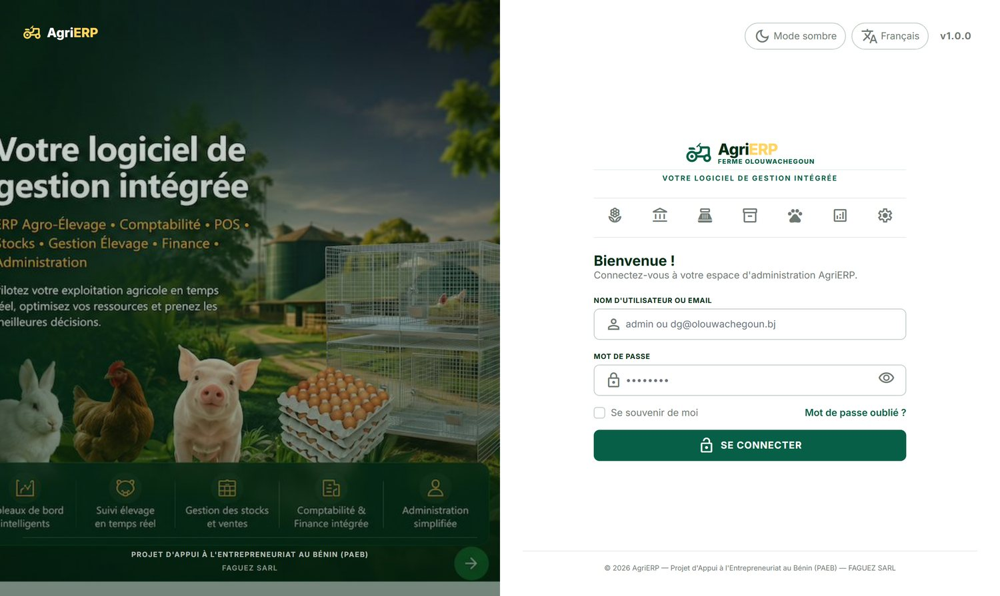
1 2 3 41Nom d'utilisateur ou email 2Mot de passe 3Mot de passe oublié 4Bouton Se connecter
Ne cochez jamais Se souvenir de moi sur le poste partagé du comptoir. La personne suivante entrerait dans le logiciel sous votre nom, et toutes ses actions seraient enregistrées à votre compte dans le journal d'audit.
Mot de passe oublié ? Cliquez sur Mot de passe oublié ? : un lien de réinitialisation est envoyé à l'adresse e-mail de votre compte. C'est la raison pour laquelle chaque compte possède une adresse e-mail, même si vous vous connectez avec un nom court.
Ne communiquez jamais votre mot de passe à un collègue, même temporairement. Chaque action réalisée dans AgriERP — une vente, une écriture, une suppression — est tracée au nom du compte connecté. Un mot de passe prêté rend cette traçabilité inutilisable le jour où elle sert vraiment.
Tous les écrans du logiciel sont bâtis sur le même modèle. Une fois cette organisation comprise, vous savez vous repérer partout.
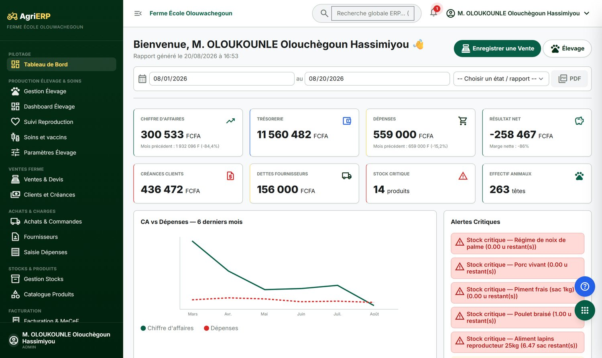
1 2 3 4 5 6| N° | Zone | À quoi elle sert |
|---|---|---|
| 1 | Menu latéral | Tous les modules du logiciel, regroupés par thème. Il n'affiche que ce que votre rôle vous autorise à ouvrir. |
| 2 | Barre supérieure | Toujours visible. Contient la recherche, les notifications et votre compte. |
| 3 | Recherche globale | Recherche un client, un produit, une facture ou une bande dans tout le logiciel. |
| 4 | Cloche de notifications | La pastille rouge indique le nombre d'alertes non lues (stock critique, créance en retard, rappel de prophylaxie). |
| 5 | Votre compte | Votre nom et votre rôle. Cliquez dessus pour accéder à votre profil ou vous déconnecter. |
| 6 | Zone de travail | Le contenu de l'écran ouvert. C'est la seule zone qui change quand vous naviguez. |
Le bouton ☰ à gauche de la barre supérieure replie le menu latéral. Sur un petit écran ou une tablette, le menu est replié par défaut : c'est normal, il n'a pas disparu.
Le menu regroupe les écrans par métier. L'écran ouvert est surligné en jaune.
| Section du menu | Écrans qu'elle contient |
|---|---|
| PILOTAGE | Tableau de Bord |
| PRODUCTION ÉLEVAGE & SOINS | Gestion Élevage · Dashboard Élevage · Suivi Reproduction · Soins et vaccins · Paramètres Élevage |
| VENTES FERME | Ventes & Devis · Clients et Créances |
| ACHATS & CHARGES | Achats & Commandes · Fournisseurs · Saisie Dépenses |
| STOCKS & PRODUITS | Gestion Stocks · Catalogue Produits |
| FACTURATION | Facturation & MeCeF |
| RESSOURCES HUMAINES | Personnel & Stages |
| ADMINISTRATION | Administration & Document |
| COMPTABILITÉ & ADMIN | Comptabilité · Paramètres Général |
| EDITIONS | Rapports & Exports |
Certains écrans ne figurent pas directement dans le menu : on y accède depuis un écran parent. C'est le cas du Rapport Mensuel, du Grand Livre, du Bilan ou de la Clôture d'Exercice, tous accessibles depuis les cartes de l'écran Comptabilité.
Si une section n'apparaît pas dans votre menu, ce n'est pas une panne : votre rôle ne l'autorise pas. Voir la section 1.9 et l'annexe A. Demandez à l'administrateur si vous pensez qu'il s'agit d'une erreur.
C'est l'écran qui s'ouvre à la connexion. Il répond en un coup d'œil à la question : où en est la ferme aujourd'hui ?
1Accès direct à la vente 2Période analysée 3Indicateurs clés 4Alertes critiques
Un résultat net négatif n'est pas forcément une mauvaise nouvelle : sur un mois où vous avez acheté de la provende pour tout le trimestre, les dépenses dépassent normalement les ventes. Comparez toujours sur une période représentative, pas sur trois jours.
Les Alertes critiques à droite sont cliquables : un clic sur une alerte de stock vous emmène directement sur le produit concerné. C'est le chemin le plus rapide pour traiter un manque avant la rupture.
Trois outils y sont disponibles en permanence, quel que soit l'écran ouvert.
Tapez quelques lettres dans le champ Recherche globale ERP… : le logiciel cherche en même temps parmi les clients, les produits, les fournisseurs, les bandes et les factures. Les résultats apparaissent immédiatement, regroupés par catégorie.
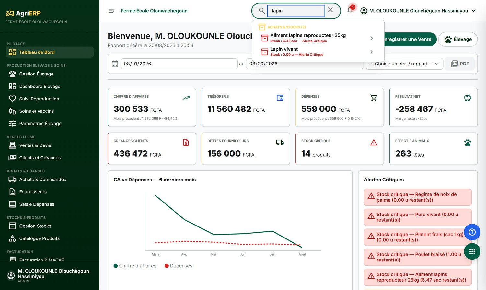
1C'est le chemin le plus court vers une fiche. Plutôt que d'ouvrir Clients et Créances puis de faire défiler la liste, tapez les trois premières lettres du nom du client dans la recherche et cliquez sur le résultat.
Cliquez sur votre nom, en haut à droite. Un menu se déroule.
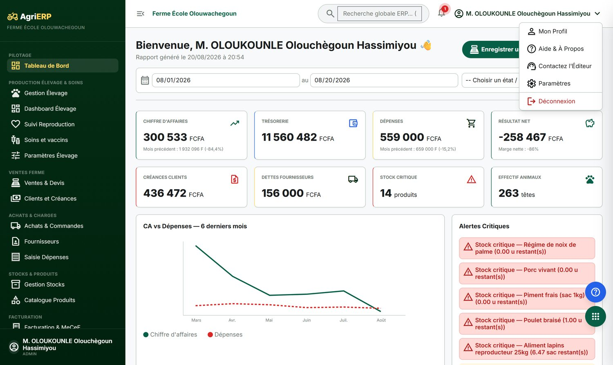
1| Entrée du menu | Ce qu'elle ouvre |
|---|---|
| Mon Profil | Vos informations, le changement de mot de passe et l'historique de vos connexions (section 1.7). |
| Aide & À Propos | La foire aux questions et la version installée (chapitre 11). |
| Contactez l'Éditeur | Le formulaire de message et de signalement de bug (chapitre 11). |
| Déconnexion | Ferme votre session (section 1.8). |
Sous votre nom, le menu rappelle votre rôle — ADMIN, COMPTABLE, CAISSIER ou ANIMALIER. C'est la façon la plus rapide de vérifier avec quel compte vous travaillez, notamment sur un poste partagé.
AgriERP vous prévient de trois manières différentes. Il est important de ne pas les confondre.
| Où | Quoi | Quand regarder |
|---|---|---|
| La cloche (barre supérieure) | Les 4 dernières notifications, avec le nombre de non lues en pastille rouge. | En permanence — la pastille rouge attire l'œil. |
| Alertes Critiques (tableau de bord) | Les 6 problèmes les plus urgents du moment, recalculés à chaque ouverture. | Chaque matin, à la connexion. |
| Centre de Notifications (écran dédié) | L'historique complet, lues et non lues. | Une fois par jour, pour traiter ce qui reste. |
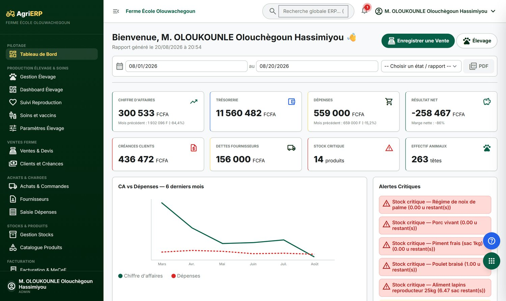
1Ce panneau ne conserve que les six alertes les plus urgentes. Il en existe trois familles, avec des règles de déclenchement précises.
| Alerte | Quand elle apparaît | Ce qu'il faut faire |
|---|---|---|
| Stock critique gravité critique |
Le stock d'un produit actif est inférieur ou égal à son seuil d'alerte. 5 produits au maximum. | Commander, produire ou transformer avant la rupture. Le clic mène à Gestion Stocks. |
| Mortalité anormale gravité critique |
Sur les 7 derniers jours, une fiche journalière affiche un taux de mortalité supérieur ou égal à 5 %. | Ouvrir la bande, vérifier les soins en cours, appeler le vétérinaire. Le clic mène à Bandes & Sujets. |
| Créance en retard gravité moyenne |
Une créance dont l'échéance est dépassée et qui n'est pas soldée. 3 au maximum. | Relancer le client depuis Clients et Créances (section 3.5). |
Le panneau s'arrête à six alertes. S'il est plein de stocks critiques, une créance en retard peut ne pas y apparaître. Le tableau de bord ne remplace donc pas la consultation régulière des écrans Gestion Stocks et Clients et Créances.
Chaque matin à 6 h, le logiciel compare le jour de cycle de chaque bande active au calendrier de prophylaxie de son espèce. Pour chaque traitement dû ce jour-là, il crée une notification :
⚠ Traitement dû aujourd'hui — AVI-2026-01
Vaccination Newcastle — NDV HB1, 1 goutte/sujet — Bande AVI-2026-01, Aviculture (Volailles)
Le jour de cycle se compte à partir de la date de référence de la bande — la mise en lot, ou la dernière saillie pour une bande de reproduction. Si un rappel vous paraît décalé, c'est cette date qu'il faut vérifier, pas le calendrier.
Deux entrées du calendrier de cuniculture et de porciculture sont formulées « chaque mois » sans jour de cycle précis : elles ne déclenchent aucun rappel automatique. Ces traitements-là restent à votre charge. Consultez l'onglet Calendriers de Prophylaxie (section 2.5) pour les repérer.
Le logiciel rapproche le stock de provende de la consommation théorique de l'effectif en place. Quand la réserve ne couvre plus assez de jours, une notification est émise. L'indicateur Autonomie aliment min. du Dashboard Élevage affiche en permanence le nombre de jours restants.
C'est l'alerte la plus utile de tout le logiciel : elle prévient avant la rupture, pas au moment où les mangeoires sont vides. Traitez-la le jour où elle arrive.
Notifications, ou la cloche ➔ Voir tout.
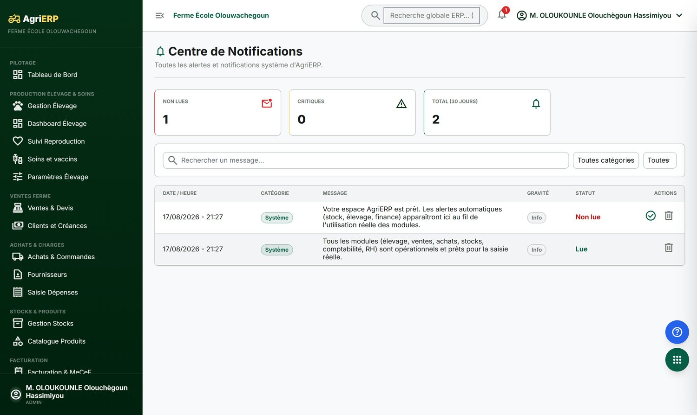
1Colonnes : Date / heure, Catégorie, Message, Gravité, Statut, Actions. Deux actions sur chaque ligne :
Les catégories que vous rencontrerez :
| Catégorie | Signification |
|---|---|
| Stock critique | Un produit est passé sous son seuil d'alerte. |
| Traitement dû aujourd'hui | Rappel de prophylaxie sur une bande. |
| Autonomie alimentaire | La provende ne couvre plus assez de jours. |
| Créance en retard | Un client a dépassé son échéance de paiement. |
| Vente sous rémanence | Une vente a été signalée sur une bande sous délai d'attente vétérinaire. |
| Sauvegarde à télécharger | Rappel hebdomadaire adressé à l'administrateur (section 10.8). |
| Système | Messages d'information du logiciel. |
Ne supprimez pas une notification sans l'avoir traitée. Supprimer l'alerte ne règle rien : le stock reste critique, la créance reste impayée, le vaccin reste à faire.
Les notifications lues depuis plus de 90 jours sont effacées automatiquement chaque semaine. L'historique reste donc lisible sans intervention de votre part.
Cliquez sur votre nom en haut à droite ➔ Mon Profil.
Le nouveau mot de passe doit contenir au moins 8 caractères, dont une lettre, un chiffre et un symbole (par exemple Ferme@2026). Le logiciel refuse tout mot de passe plus faible — ce n'est pas une erreur de votre part.
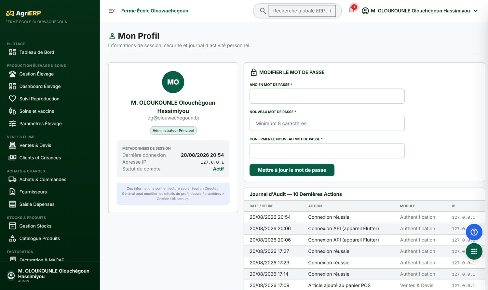
Colonnes : Date / heure, Action, Module, IP.
Parcourez cette liste de temps en temps. Une connexion à une heure où vous ne travaillez pas, ou depuis une adresse inhabituelle, doit être signalée immédiatement à l'administrateur — et votre mot de passe changé dans la foulée.
Déconnectez-vous systématiquement en quittant le poste du comptoir, même pour une courte absence. Fermer l'onglet du navigateur ne suffit pas : la session reste ouverte.
AgriERP fonctionne avec quatre rôles. Votre rôle détermine les écrans visibles dans le menu et les actions autorisées à l'intérieur de ces écrans.
| Rôle | Qui | Ce qu'il peut faire |
|---|---|---|
| Administrateur | Direction, support technique | Tout, sans exception : paramètres, utilisateurs, sauvegardes, clôture. |
| Comptable | Comptable de la ferme | Toute la comptabilité, la clôture d'exercice, les rapports et leurs exports. |
| Caissier | Personnel du comptoir | Enregistrer les ventes, gérer les clients et les créances, exporter les ventes. |
| Animalier | Chef d'élevage, soigneurs | Bandes, fiches journalières, reproduction, soins et vaccins, archivage élevage. |
La protection ne se limite pas à cacher un lien du menu. Même en tapant l'adresse d'un écran directement dans le navigateur, un utilisateur non autorisé est bloqué par le serveur. Il est donc inutile — et sans risque — d'essayer.
La répartition complète, écran par écran, figure à l'annexe A.
Bandes et sujets, fiches journalières, rationnement, reproduction, soins, abattage et suivi technique.
Le module Élevage est le cœur du travail quotidien à la ferme. Il reprend, écran par écran, les registres papier existants : registre des bandes, fiche journalière, cahier de prophylaxie, registre des reproducteurs.
Dans AgriERP, rien ne se saisit « en vrac ». Toute donnée d'élevage est rattachée à une bande (aussi appelée lot) : un groupe d'animaux de la même espèce, entré à la même période, suivi ensemble.
Créer la bande ➔ Y enregistrer des sujets ➔ Saisir la fiche chaque jour ➔ Vendre ou transformer
C'est parce que tout est rattaché à une bande que le logiciel sait calculer un taux de mortalité, un gain moyen quotidien ou une marge par lot. Une saisie sans bande serait un chiffre sans histoire.
Gestion Élevage ➔ Bandes & Sujets ➔ Nouvelle Bande
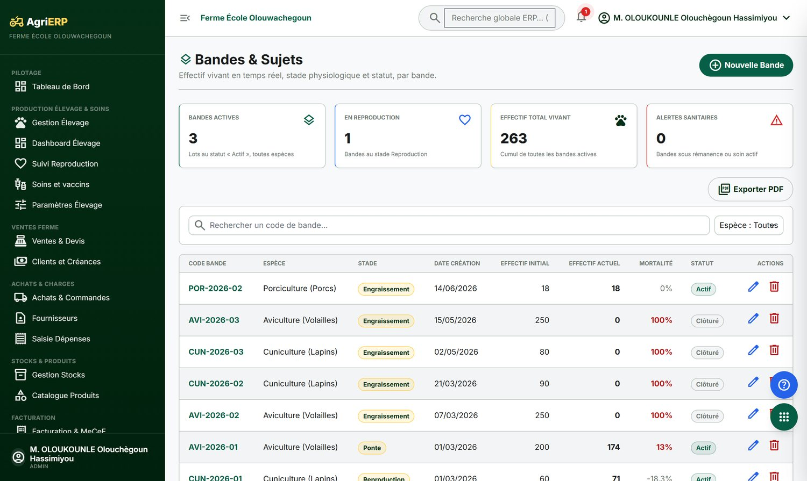
1 2Le tableau affiche, pour chaque bande : Code bande, Espèce, Stade, Date de création, Effectif initial, Effectif actuel, Mortalité, Statut.
Le code de la bande ne peut plus être modifié une fois des saisies journalières rattachées. Prenez le temps de le vérifier avant de valider — un code erroné se traîne ensuite dans tous les rapports.
Le champ Produit issu de cette bande est ce qui permet à la récolte quotidienne d'alimenter automatiquement le stock vendable. Sans lui, vous devrez saisir l'entrée en stock à la main.
Gestion Élevage ➔ Enregistrer des Sujets ➔ Nouveau Sujet
Cet écran sert à faire entrer des animaux dans une bande après sa création : une nouvelle livraison, une naissance en nombre, un don reçu.
Sur chaque ligne du tableau Bandes & Sujets, deux icônes sont disponibles à droite, dans la colonne Actions.
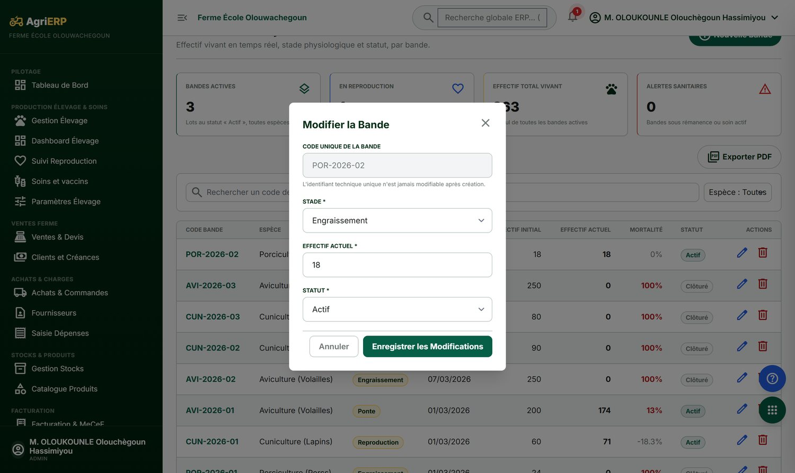
| Icône | Effet |
|---|---|
| crayon (edit) | Ouvre la fenêtre de modification, préremplie avec les valeurs actuelles. Corrigez, puis Enregistrer. |
| corbeille | Archive la bande : elle sort des listes actives, sans être supprimée. |
L'icône corbeille n'efface rien. La bande, ses fiches journalières et ses ventes restent en base et un administrateur peut la restaurer depuis Paramètres ➔ Restauration. C'est vrai de toutes les corbeilles du logiciel.
Les quatre indicateurs en haut de l'écran — Bandes actives, En reproduction, Effectif total vivant, Alertes sanitaires — se recalculent à chaque ouverture. Ils ne se saisissent pas.
C'est la saisie la plus fréquente : une fois par jour, par bande. Chaque filière a sa fiche, adaptée à ses données :
| Écran | Filière |
|---|---|
| Fiches Pondeuses | Aviculture — suivi de la ponte et de la récolte d'œufs |
| Fiches Volailles Reproducteurs | Aviculture — reproducteurs, poussins, Goliath |
| Fiches Lapins | Cuniculture |
| Fiches Porcs | Porciculture |
| Fiches Escargots | Héliciculture — visible seulement si le module est activé |
Gestion Élevage ➔ Fiches Pondeuses
Le haut de l'écran rappelle quatre indicateurs : Effectif pondeuses vivantes, Taux de ponte moyen, Stock plateaux (30 œufs) et Taux de mortalité. Le bloc Saisie Journalière Ponte & Cheptel se trouve juste en dessous.
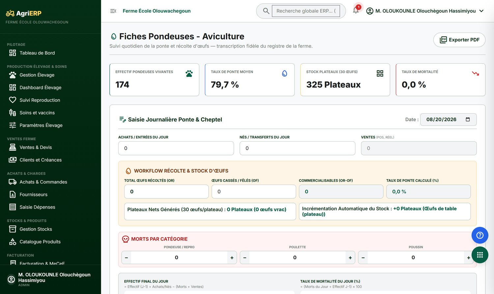
1 2 3 41Total œufs récoltés (OR) 2Œufs cassés / fêlés (OF) 3Commercialisables (calculé) 4Report automatique en stock
Quatre valeurs sont calculées par le logiciel et ne se saisissent pas :
Commercialisables = OR − OF • Taux de ponte = œufs ÷ effectif × 100 • Effectif final = effectif de la veille + achats et nés − (morts + ventes) • Taux de mortalité = morts du jour ÷ effectif de la veille × 100.
Le champ Ventes (POS, réel) est grisé : il se remplit tout seul à partir des ventes réellement enregistrées à la caisse. Ne cherchez pas à le corriger — si le chiffre vous semble faux, c'est une vente qui a été mal saisie au comptoir, et c'est là qu'il faut la reprendre.
Les œufs commercialisables alimentent automatiquement le stock par plateaux de 30. Le bloc Incrémentation Automatique du Stock vous indique combien de plateaux viennent d'être ajoutés. Vous n'avez aucune saisie de stock à faire par ailleurs.
Saisissez la fiche le jour même. Les effectifs se calculent en chaîne, chaque jour repartant du précédent : une journée oubliée fausse tous les jours suivants jusqu'à ce qu'elle soit rattrapée.
Même principe, avec les catégories propres à la cuniculture : Reproducteur, Lapin de chair, Lapereau. Vous y saisissez en plus l'Effectif mâles, l'Effectif femelles, le nombre de Sevrés et de sujets S/mères (sous mères).
Les entrées et sorties sont ventilées en cinq colonnes : Achat, Né, Mort, Vente, Don.
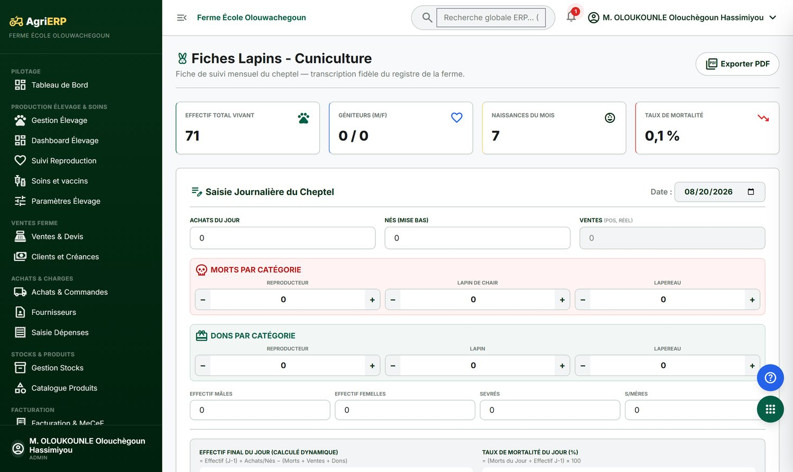
Les stades physiologiques sont : Reproducteur (truie/verrat), Porc marchand / engraissement, Porcelet. Le détail du cheptel distingue Verrats, Truies gestantes, Porcelets et Engraissement.
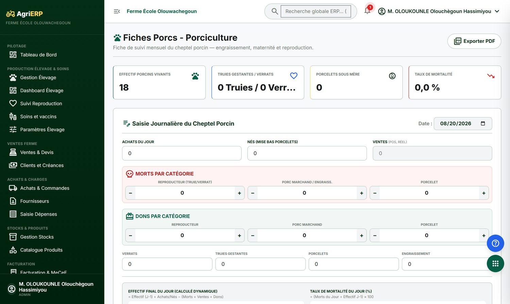
Sur la fiche Porcs, le poids est en kilogrammes ; sur les fiches Lapins et Pondeuses, il est en grammes. Se tromper d'unité multiplie ou divise le GMQ par mille et rend toute l'analyse de croissance inutilisable.
Elle suit les reproducteurs, les poussins et la souche Goliath, avec les œufs mis à couver et les éclosions obtenues.
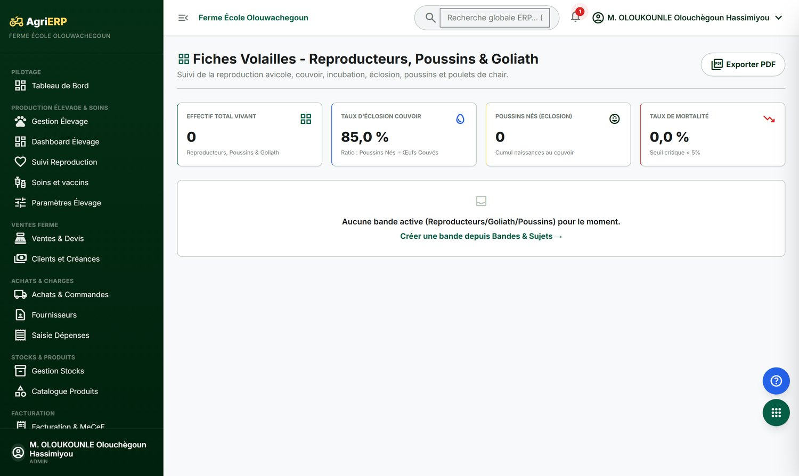
Si aucune bande de reproducteurs n'existe encore, l'écran affiche simplement un renvoi : « Créer une bande depuis Bandes & Sujets → ». Ce n'est pas une panne — créez d'abord la bande (section 2.2).
Sur les fiches Lapins et Porcs, le poids général pesé est le poids total de l'échantillon, pas le poids moyen d'un animal. Le logiciel calcule lui-même le poids moyen en divisant par l'effectif. Saisir un poids moyen à cet endroit divise le résultat par le nombre de têtes et rend le suivi de croissance absurde.
Paramètres Élevage ➔ Fiche de Rationnement (g/j)
Cet écran fixe la ration normative — la quantité de provende théorique par tête et par jour, pour chaque espèce et chaque stade physiologique.
Sur la fiche journalière, le tableau de rationnement compare la ration normative (issue de cet écran) à la provende réellement servie. L'écart entre les deux est le premier signal d'un problème : gaspillage, vol, ou animaux qui ne mangent pas.
Cliquez sur l'icône crayon de la ligne. La fenêtre Saisir une Ration se rouvre, préremplie.
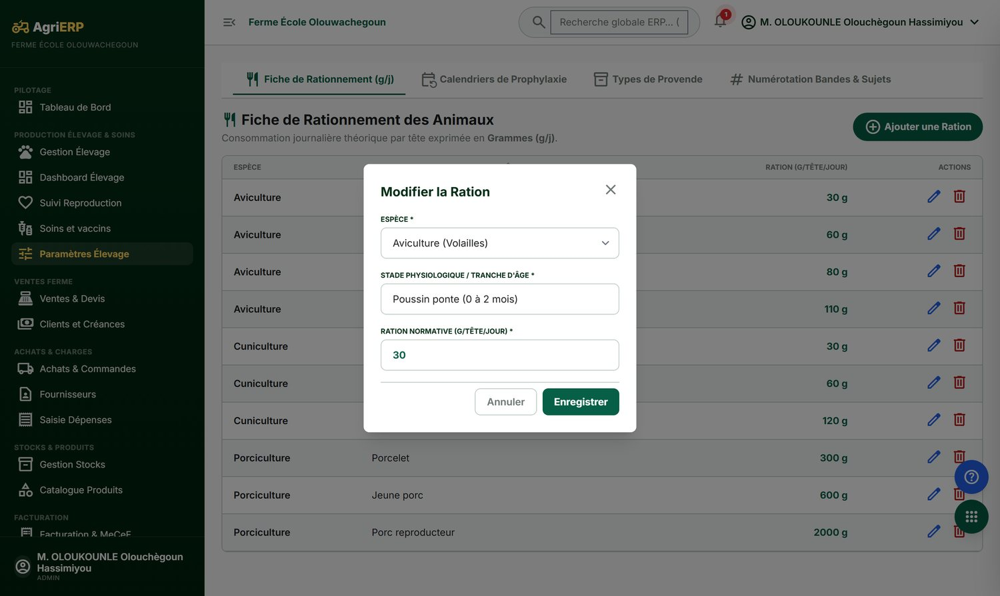
Paramètres Élevage ➔ Calendriers de Prophylaxie
C'est le programme sanitaire type de la ferme, espèce par espèce. Colonnes : Jour / période, Traitement prévu, Produit conseillé, Posologie, Délai rémanence.
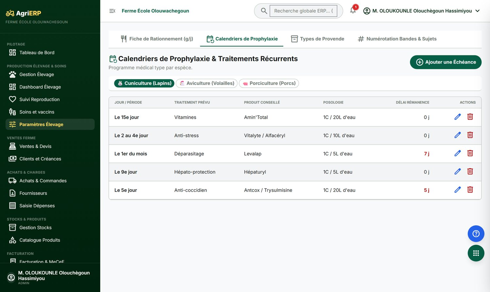
La colonne Délai rémanence de ce calendrier est reprise par défaut lors de la saisie d'un soin. Une valeur fausse ici se propage à toutes les bandes traitées : elle autoriserait la vente d'animaux encore sous traitement (section 2.7).
Paramètres Élevage ➔ Types de Provende
Colonnes : Nom du type d'aliment, Espèce cible, Poids sac standard (kg), Prix indicatif (FCFA/kg).
Le poids du sac standard permet au logiciel de convertir une réserve exprimée en sacs vers une consommation exprimée en grammes par tête. C'est ce qui rend possible le calcul de l'autonomie alimentaire (section 1.6).
Paramètres Élevage ➔ Numérotation
Cet écran fixe les préfixes utilisés pour créer les identifiants : Format d'affichage du nom de bande, Lapines reproductrices, Mâles saillisseurs, Truies reproductrices, Verrats reproducteurs, Portées de porcelets, Préfixe lots volailles / pondeuses, Préfixe bâtiments / parcs volailles et Préfixe parcs / fosses escargots.
Fixez ces préfixes une fois pour toutes, au démarrage. Les changer en cours d'exploitation crée deux générations d'identifiants qui cohabitent dans les mêmes registres — le personnel ne s'y retrouve plus.
Suivi Reproduction
Quatre onglets d'espèce en haut de l'écran : Lapins, Volailles, Porcs, Escargots.
Le tableau suit ensuite chaque femelle : Bande, N° lapine, Date saillie, Mâle n°, Palpation, Mise bas attendue, Nés (vivants), Statut. Le bouton Saisir Mise Bas clôture le cycle.
Les échéances sont calculées à partir de la date de saillie, pas saisies : palpation, mise bas attendue, et pour les porcs le retour de chaleur (J+21) et le sevrage (J+42). Corrigez la date de saillie si une échéance vous paraît fausse — c'est la seule donnée d'origine.
Onglet Porcs. Colonnes : Bande, N° truie, Date saillie, Verrat n°, Retour chaleur, Mise bas attendue, Nés (vivants), Statut.
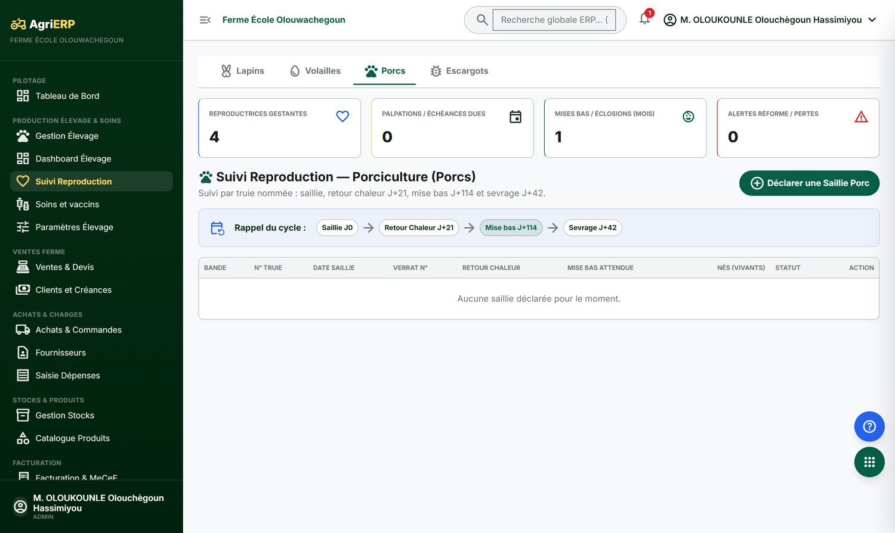
Onglet Volailles — Suivi Reproduction Volailles — Couvoir & Éclosion. Le panneau reprend les œufs mis à couver et les éclosions du mois, à partir de ce qui a déjà été saisi sur la fiche Reproducteurs.
Cet onglet est un résumé, pas un second formulaire. Les œufs couvés et les naissances se saisissent une seule fois, sur la fiche journalière Reproducteurs. Saisir la même donnée à deux endroits est précisément ce que le logiciel cherche à éviter.
Sans œuf mis à couver, le taux d'éclosion s'affiche en tiret et non en « 0,0 % » : un zéro se lirait comme un échec total du couvoir, alors qu'il n'y a simplement rien à mesurer.
Les quatre indicateurs communs aux quatre onglets sont : Reproductrices gestantes, Palpations / échéances dues, Mises bas / éclosions (mois) et Alertes réforme / pertes.
Soins et vaccins — trois onglets.
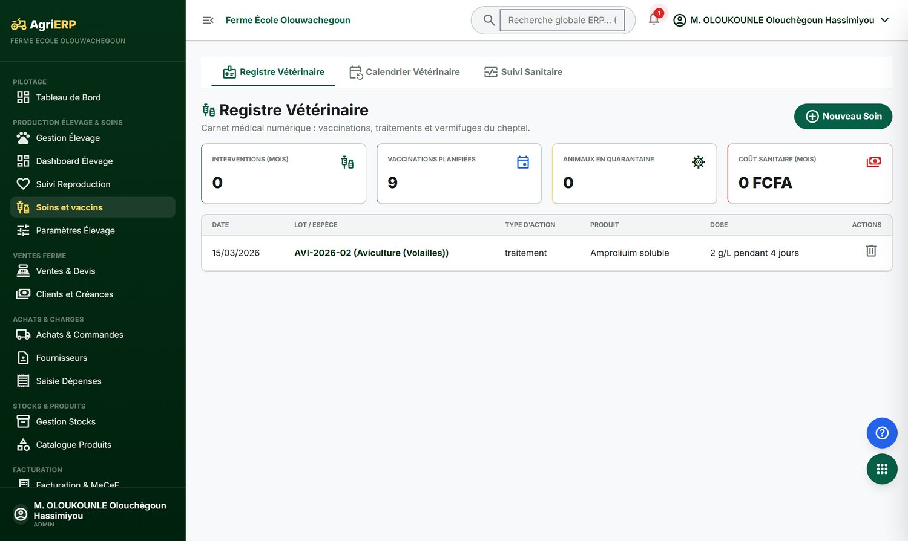
1 2 3 4Le délai de rémanence n'est pas une simple information : il bloque la vente. Tant que le délai court, AgriERP refuse toute vente d'un animal de cette bande et affiche « Vente interdite — bande sous rémanence vétérinaire active ».
Oublier de saisir ce délai revient à autoriser la vente d'un animal encore sous traitement. C'est un risque sanitaire pour le consommateur et un risque juridique pour la ferme.
Gestion Élevage ➔ Transformation
Cet écran transforme des animaux vivants en produit fini vendable : un poulet vivant devient du poulet braisé ou fumé.
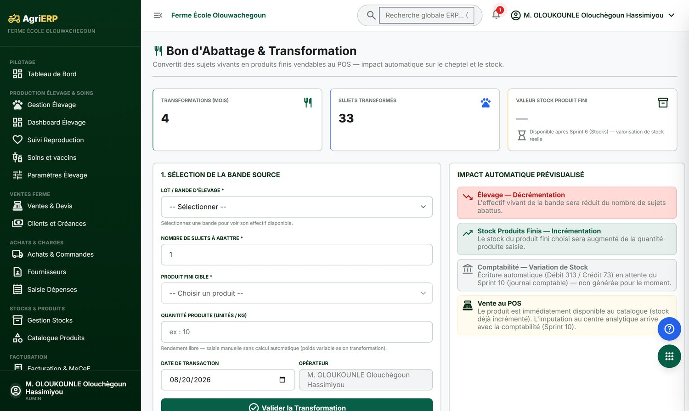
1 2 3Une transformation validée fait deux choses en même temps : elle diminue l'effectif de la bande du nombre de sujets abattus, et elle augmente le stock du produit fini de la quantité produite. Vous n'avez aucune saisie de stock complémentaire à faire.
La quantité produite est rarement égale au nombre de sujets abattus (rendement, découpe, pertes). Saisissez ce que vous avez réellement obtenu et pesé, jamais le chiffre théorique.
Dashboard Élevage
| Onglet | Ce qu'il montre |
|---|---|
| Synthèse Globale | Vue d'ensemble des trois filières : effectifs, mortalité, production. |
| GMQ & Croissance | Quatre indicateurs — Effectif total vivant, Autonomie aliment min., GMQ moyen, Mortalité cumulée (7 j) — puis le GMQ bande par bande et les rappels VMS à venir. |
| Bilan Technico-Économique | Pour un lot : Coût total connu, Revenu total, Marge nette, avec le détail des coûts et des revenus. |
| Analyse Sanitaire | Fréquence des maladies : Filière, Nb traitements (mois), Coût total, Taux de morbidité %. |
| Prévision de Croissance | Bande, Poids actuel (g), Tendance (g/j), Projection à 30 jours (g). |
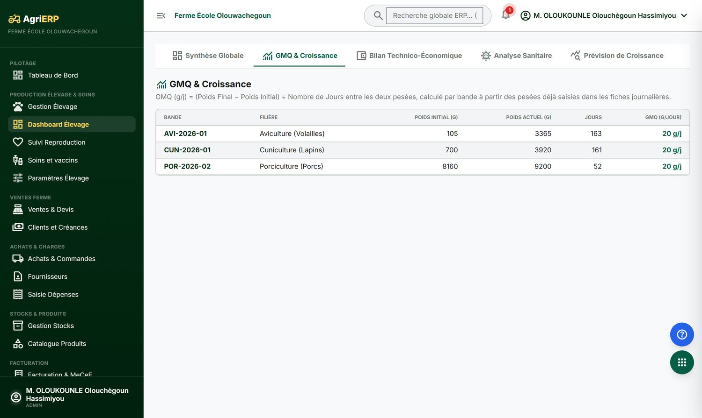
L'indicateur Autonomie aliment min. est le plus opérationnel des quatre : il donne le nombre de jours de provende restants pour la bande la moins bien pourvue. C'est votre signal de commande.
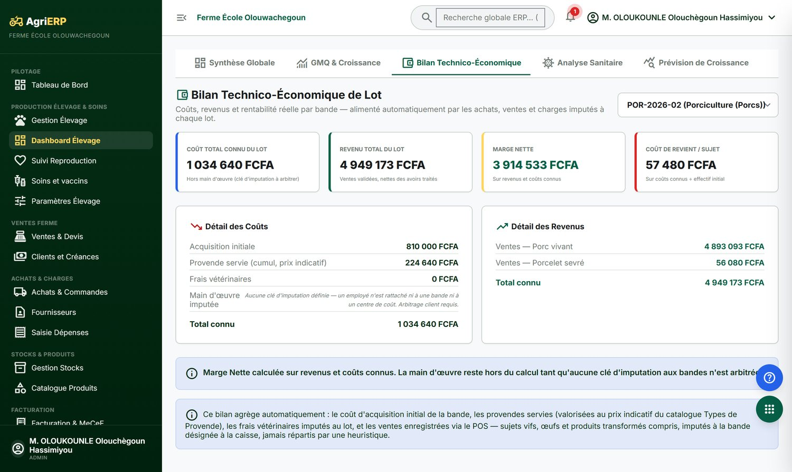
Le libellé exact est « Coût total connu du lot ». Il ne contient que ce qui a été saisi et rattaché : acquisition, provende, soins. Une charge payée en espèces sans passer par Saisie Dépenses n'y figure pas, et la marge apparaît alors meilleure qu'elle ne l'est.
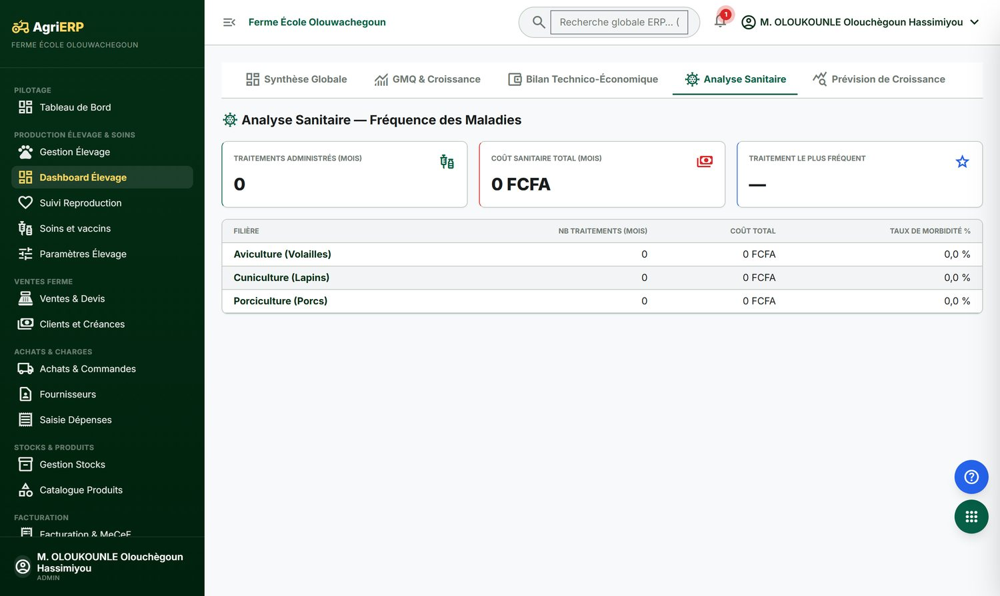
Analyse Croissance compare, bande par bande, le poids précédent et le poids actuel pour en déduire le GMQ (gain moyen quotidien, en grammes par jour) et le situer face à l'objectif de la race.
Le GMQ n'apparaît que si au moins deux pesées ont été saisies sur la bande. Une seule pesée ne permet aucun calcul de progression — ce n'est pas un défaut du logiciel.
Bilan Technico-Économique rassemble, pour une bande donnée, ce qu'elle a coûté (acquisition, provende, soins) et ce qu'elle a rapporté (ventes). C'est le document qui répond à la question : ce lot a-t-il été rentable ?
Registre des Reproducteurs suit les animaux identifiés individuellement : Identifiant, Espèce, Sexe, Race, Bande, Cage, Statut.
Cliquez sur l'icône œil d'une ligne pour ouvrir la fiche du sujet. Un bouton Exporter PDF édite la fiche complète.
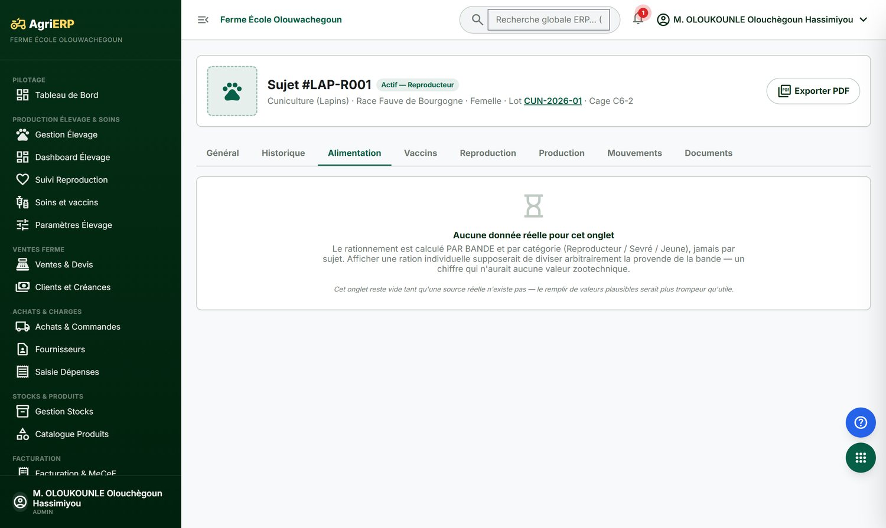
| Onglet | Contenu |
|---|---|
| Général | Identification : espèce, catégorie, date de naissance, date d'entrée, bande, cage. Un QR code propre au sujet permet de le retrouver depuis le terrain. |
| Historique | La suite chronologique des événements du sujet. |
| Alimentation | Les rations qui lui ont été appliquées. |
| Vaccins | Date, Action, Produit, Dose — tous les soins reçus. |
| Reproduction | Ses saillies, palpations et mises bas. |
| Production | Ce qu'il a produit : œufs, portées, poids. |
| Mouvements | Date, Mouvement, Détail — entrées, transferts, sorties. |
| Documents | Les pièces jointes au sujet (certificats, photos). |
Imprimez le QR code de l'onglet Général et fixez-le sur la cage. Un scan avec le téléphone ouvre directement la fiche du sujet, sans le chercher dans la liste.
Éditez la fiche PDF d'un reproducteur avant une vente ou une exposition : elle rassemble en une page la généalogie, les vaccins et les performances du sujet.
Si vous ouvrez une fiche et lisez « Module non activé » (le cas le plus courant est l'héliciculture), la filière n'est pas ouverte sur votre installation.
Un administrateur peut l'activer : Paramètres ➔ Modules Actifs.
Enregistrer une vente au comptoir, établir un devis, suivre les créances et relancer les clients.
L'écran Ventes & Devis regroupe quatre onglets : Enregistrer Vente, Devis Prestations, Historique des Ventes et Retours et Avoirs.
Ventes & Devis ➔ Enregistrer Vente
C'est l'écran de caisse. Il est conçu pour être rapide : les produits à gauche, le panier à droite.
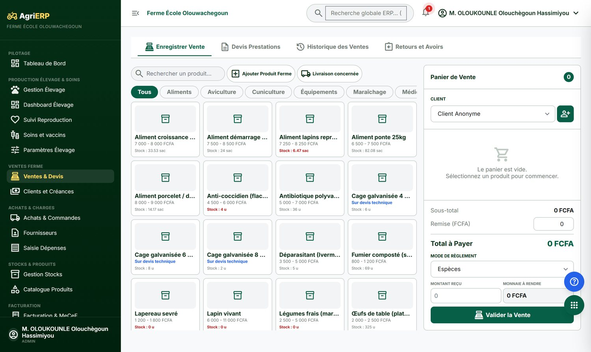
1 2 3 4 51Rechercher un produit 2Ajouter un produit ferme 3Choix du client 4Mode de règlement 5Valider la vente
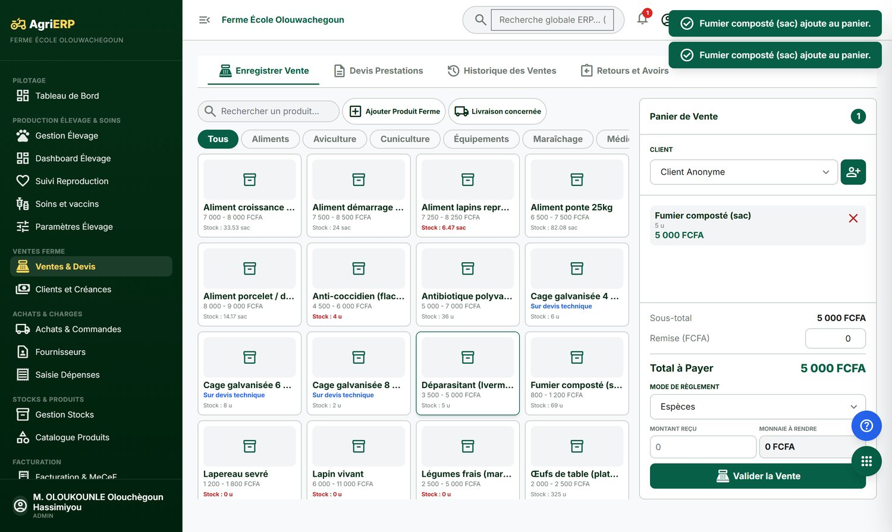
Le champ Montant global de la vente attend le total, pas un prix unitaire. Pour 30 plateaux d'œufs vendus 2 500 F l'unité, saisissez 75 000, pas 2 500.
Ce fonctionnement est volontaire : à la ferme, le prix se négocie sur le lot entier, et le logiciel ne doit jamais décider seul du total à la place du vendeur.
| Mode | Quand l'utiliser |
|---|---|
| Espèces | Paiement comptant en liquide. Saisissez le montant reçu pour obtenir la monnaie à rendre. |
| Mobile Money | Paiement par MTN MoMo, Moov Money ou équivalent. |
| Virement bancaire | Le client paie par virement sur le compte de la ferme. |
| Crédit / À terme | Le client emporte la marchandise et paiera plus tard. Une créance est créée automatiquement. |
| Déduire de l'avance | Le client a déjà versé une avance ; la vente s'impute dessus. |
Le mode Crédit / À terme est réservé aux clients enregistrés. Choisir Client Anonyme avec un règlement à crédit revient à créer une dette que personne ne pourra recouvrer.
« Vente interdite — bande sous rémanence vétérinaire active »
Les animaux de cette bande sont sous délai d'attente après un traitement. La vente est refusée par le logiciel. Retirez l'article du panier et prévenez le chef d'élevage — n'essayez pas de contourner le blocage en changeant de bande source.
« Stock insuffisant »
Le message apparaît en orange mais la vente reste possible : sur une ferme, la marchandise physique existe parfois avant sa saisie informatique. Signalez néanmoins l'écart au responsable des stocks — il faudra le régulariser par un ajustement d'inventaire (section 5.3).
Un produit affiché Sur devis technique ne peut pas être vendu directement au comptoir : le logiciel vous redirige vers l'onglet Devis. C'est le cas des cages et équipements, dont le prix dépend d'un chiffrage.
Un clic sur Valider la Vente ne fait pas qu'imprimer un ticket. En une seule opération, le logiciel :
Si le message de confirmation précise « écriture comptable non générée », la vente est bien enregistrée mais la comptabilité ne l'a pas reçue : il manque un mode de règlement ou un compte de trésorerie. Signalez-le au comptable le jour même pour régularisation au journal.
Ventes & Devis ➔ Devis Prestations ➔ Nouveau Devis
Sur chaque ligne du tableau, les icônes permettent d'accepter, refuser, modifier, envoyer le devis ou de le convertir en facture.
Un devis accepté se transforme en facture sans ressaisie : utilisez l'icône facture de la ligne plutôt que de recréer la vente au comptoir.
Ventes & Devis ➔ Historique des Ventes
Le tableau affiche : Facture, Client, Date, Articles, Remise, Total TTC, Payé, Reste, Mode, Statut. Le bouton Réinitialiser efface les filtres de recherche.
Cliquez sur l'icône œil de la ligne. Le détail complet s'affiche : les articles vendus, les quantités, les montants, le mode de règlement et le statut de la facture.
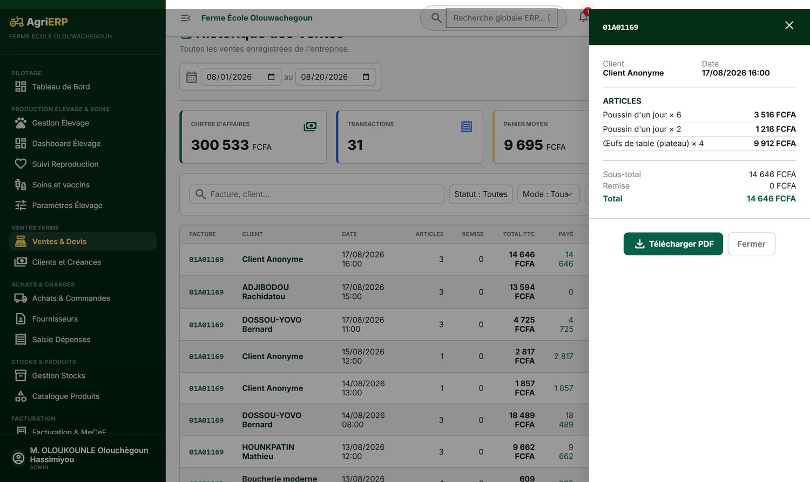
Avant d'annuler une vente ou d'établir un avoir, ouvrez toujours ce détail : il vous dit exactement ce qui a été vendu et à quel prix. C'est aussi ce que vous devez lire au client au téléphone.
Annuler une vente est une opération lourde et tracée : elle remet la marchandise en stock, retire l'argent de la caisse et contre-passe l'écriture comptable. Elle reste visible dans l'historique avec le statut Annulée — une vente n'est jamais effacée.
N'annulez une vente que le jour même et pour une erreur de saisie. Pour un retour de marchandise, utilisez un avoir (section 3.4).
Ventes & Devis ➔ Retours et Avoirs ➔ Nouveau Retour
Le tableau suit chaque avoir : Avoir, Facture, Client, Date, Motif, Décision, Montant, Statut.
Un avoir validé génère sa propre écriture comptable, en sens inverse de la vente d'origine. La vente initiale reste intacte : c'est ce qui permet, en fin d'année, de distinguer le chiffre d'affaires réalisé du chiffre d'affaires repris.
Clients et Créances — quatre onglets.
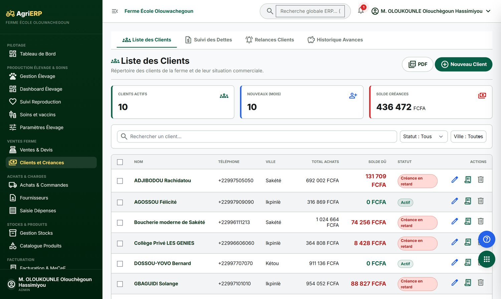
1 2Colonnes : Nom, Téléphone, Ville, Total achats, Solde dû, Statut. Le bouton Nouveau Client demande le Nom complet, le Téléphone, la Ville et l'Email.
Les indicateurs du haut — Clients actifs, Nouveaux (mois), Solde créances — se recalculent seuls.
Trois icônes sont disponibles sur chaque ligne, dans la colonne Actions :
| Icône | Effet |
|---|---|
| crayon | Ouvre Modifier le Client, préremplie. Corrigez le nom, le téléphone, la ville ou l'e-mail, puis Enregistrer. |
| facture | Ouvre le profil du client (ventes, créances, avances, relances). |
| corbeille | Archive le client. Ses ventes passées restent intactes. |
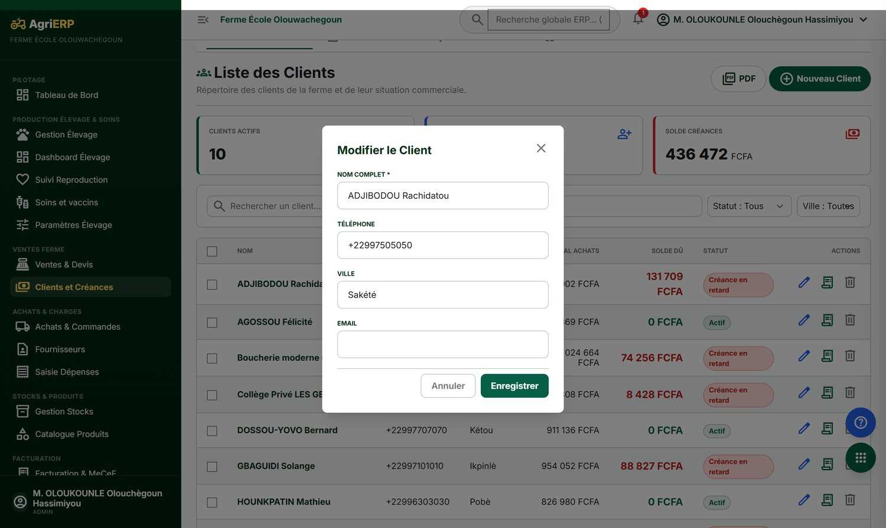
N'archivez jamais un client dont le solde dû n'est pas nul : la créance reste enregistrée mais le client disparaît des listes de relance. Encaissez d'abord, archivez ensuite.
Saisissez toujours le téléphone : sans lui, aucune relance par SMS ni par WhatsApp n'est possible, et c'est le canal qui fonctionne réellement pour le recouvrement.
Colonnes : Débiteur, Facture associée, Échéance, Total facturé, Solde restant. Le bouton Ajouter un Recouvrement enregistre un paiement reçu : saisissez le Montant du règlement (FCFA) et le Compte de trésorerie qui l'encaisse.
Choisissez le bon compte de trésorerie : espèces reçues en main propre → Caisse ; virement reçu → Compte bancaire. Une erreur ici fait diverger le solde affiché du solde réel, et l'écart n'est retrouvé qu'au rapprochement bancaire, parfois des semaines plus tard.
Quatre canaux de relance sont proposés sur chaque débiteur : Relancer WhatsApp, Relancer par Mail, Relancer par SMS et Exporter Courrier.
Choisissez le Niveau de relance puis adaptez le Modèle de message. Les mentions [NOM], [FACTURE], [MONTANT_DU] et [DATE_ECHEANCE] sont remplacées automatiquement par les valeurs du client — ne les modifiez pas.
L'envoi par e-mail et par SMS suppose que la configuration a été faite : Paramètres ➔ Intégrations. Le bouton Configurer Email & SMS vous y conduit directement.
Colonnes : Client, Montant avance, Solde restant, Date, Statut. Le bouton Nouvelle Avance demande le Client, le Montant (FCFA) et la Date.
Cliquez sur le nom d'un client pour ouvrir sa fiche. Le haut de l'écran affiche son solde global dû et sa limite de crédit, puis trois actions : Modifier la fiche, Enregistrer un règlement, Envoyer une relance rapide.
| Onglet | Contenu |
|---|---|
| Ventes | Facture, Date, Articles, Montant, Statut — tout ce que ce client a acheté. |
| Créances | Ce qu'il doit encore, facture par facture, avec les échéances. |
| Avances & Acomptes | Les sommes versées d'avance et le solde qu'il lui reste à consommer. |
| Relances | L'historique des relances envoyées : quand, par quel canal, à quel niveau. |
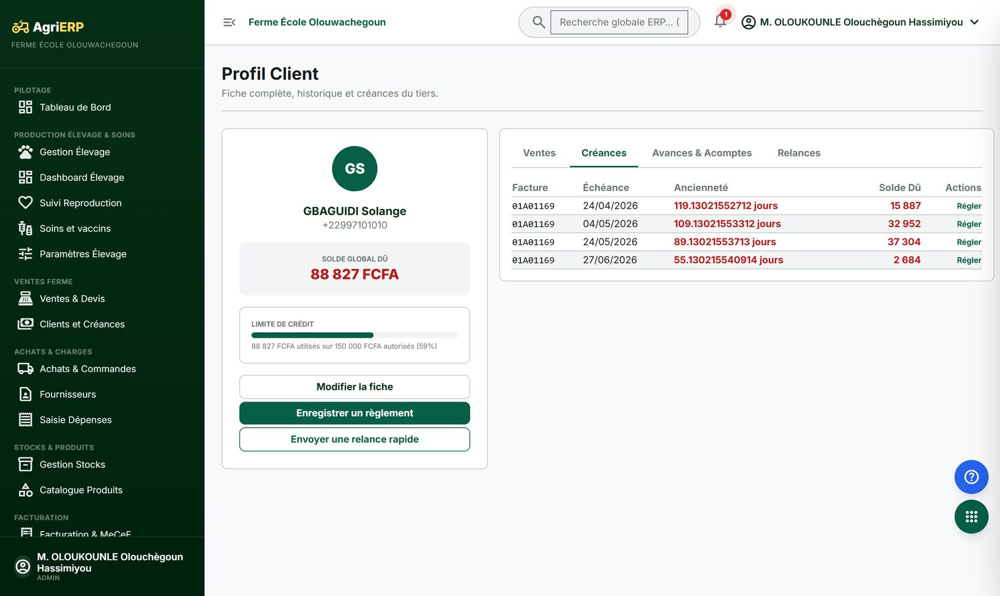
La limite de crédit affichée en haut du profil est le montant maximal que la ferme accepte de laisser impayé pour ce client. Comparez-la au solde dû avant d'accorder une nouvelle vente à terme.
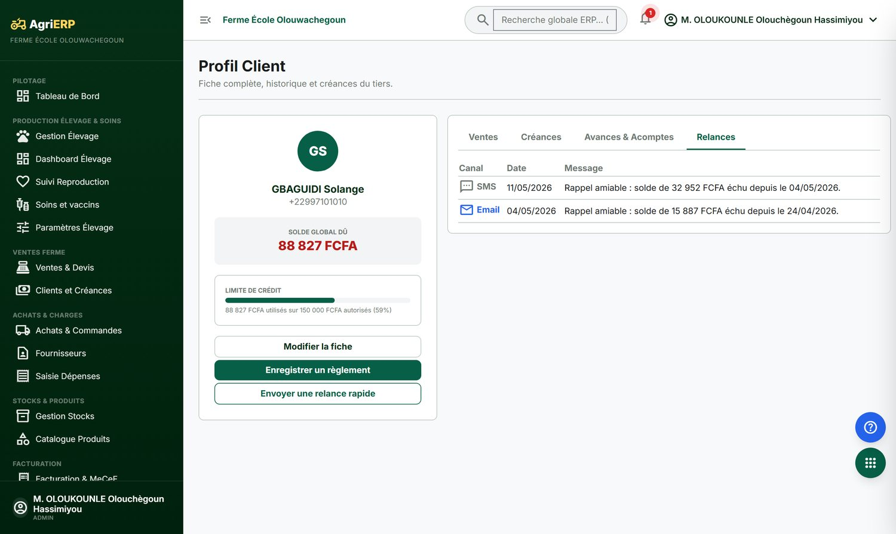
Consultez l'onglet Relances avant d'appeler : relancer trois fois la même semaine par le même canal irrite le client sans faire avancer le recouvrement. L'historique vous dit où vous en êtes.
Avant d'accorder une vente à crédit, ouvrez le profil du client : son solde dû et son historique de règlements y sont réunis. C'est trente secondes qui évitent des mois de relance.
Enregistrer les achats de la ferme, suivre les fournisseurs et saisir les charges courantes.
Deux écrans distincts, souvent confondus : Achats & Commandes sert à ce qui entre en stock (provende, médicaments, matériel) ; Saisie Dépenses sert à ce qui ne s'y stocke pas (carburant, électricité, transport).
Achats & Commandes ➔ Enregistrer un Achat
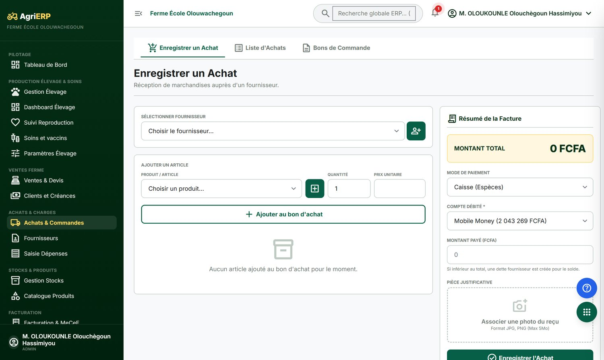
1 2 3 4L'enregistrement d'un achat augmente le stock des articles reçus, diminue la trésorerie du montant payé, génère l'écriture comptable et crée la dette pour le solde impayé. Une seule saisie, quatre effets.
Photographiez le reçu avant de le ranger et joignez-le tout de suite. Une pièce justificative attachée à la saisie est retrouvée en trois secondes le jour du contrôle ; un reçu classé dans un carton ne l'est jamais.
Achats & Commandes ➔ Liste d'Achats
Colonnes : Référence achat, Date, Fournisseur, Catégorie, Montant total, Statut. Le bouton Ajouter Remboursement enregistre un retour de marchandise au fournisseur.
Achats & Commandes ➔ Bons de Commande
Le bon de commande est un engagement avant livraison : il ne touche ni le stock ni la trésorerie.
Tant que la réception n'est pas enregistrée, la marchandise n'est pas en stock, même si elle est physiquement dans le magasin. Réceptionnez le bon le jour de la livraison.
Fournisseurs — trois onglets : Fiches Fournisseurs, Ajouter Fournisseur, Dettes Fournisseurs.
Cliquez sur l'icône œil d'une fiche. Le haut de l'écran affiche le solde global dû, puis deux actions : Modifier la fiche et Enregistrer un règlement.
| Onglet | Contenu |
|---|---|
| Achats | Référence, Date, Catégorie, Montant, Statut — l'historique de ce que vous lui avez acheté. |
| Dettes | Ce que la ferme lui doit encore, avec les échéances. |
| Commandes | Les bons de commande en cours et livrés. |
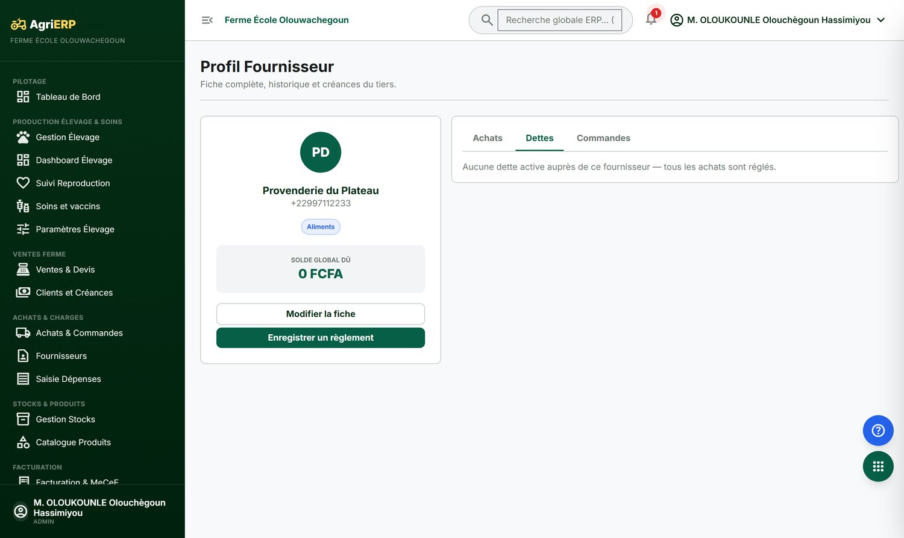
Avant de passer une nouvelle commande, ouvrez le profil du fournisseur : un solde dû important est le meilleur argument pour négocier un délai, et la meilleure raison de payer avant de commander à nouveau.
Saisie Dépenses
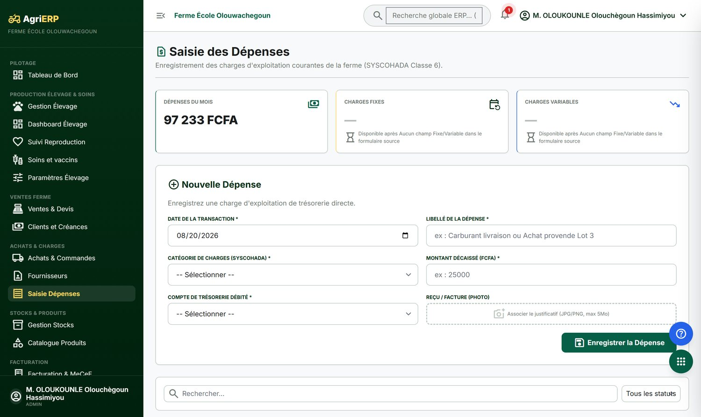
1 2 3 41Libellé 2Catégorie SYSCOHADA 3Compte de trésorerie 4Enregistrer
La catégorie de charges détermine le compte comptable mouvementé, et donc la lecture du compte de résultat. Une erreur de catégorie ne se voit pas le jour même : elle apparaît des mois plus tard, dans un poste de charges anormalement gonflé. En cas de doute, demandez au comptable avant de valider.
Achat ou dépense ? La règle est simple : si l'article entre en stock, c'est un achat (provende, médicaments, matériel). S'il est consommé immédiatement, c'est une dépense (carburant, électricité, transport, réparation).
Suivre les quantités et leur valeur, corriger un écart d'inventaire, tenir le catalogue à jour.
Le stock n'est presque jamais saisi à la main : il bouge tout seul à chaque vente, chaque achat, chaque transformation et chaque récolte d'œufs. Cet écran sert à consulter, à vérifier et à corriger les écarts.
Gestion Stocks ➔ Tableau & Valorisation
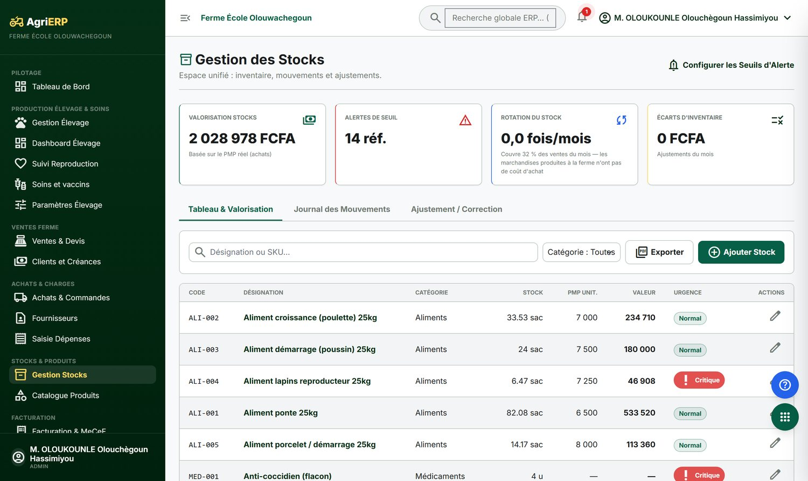
1 2 3 4Colonnes : Code, Désignation, Catégorie, Stock, PMP unit., Valeur, Urgence.
Le PMP (prix moyen pondéré) est le coût moyen d'une unité en stock, recalculé à chaque achat. C'est lui qui donne la valeur du stock — et non le prix de vente. Deux livraisons de provende achetées à des prix différents donnent un PMP intermédiaire : c'est normal.
La colonne Urgence signale les produits sous leur seuil d'alerte. Ce sont eux qui remontent en Alertes critiques sur le tableau de bord.
Gestion Stocks ➔ Journal des Mouvements
Chaque entrée et chaque sortie y est tracée : Date / heure, Référence, Produit, Type, Motif, Quantité, Valeur.
C'est l'écran à ouvrir quand un stock affiché ne correspond pas à la réalité du magasin. Remontez les mouvements du produit : dans la quasi-totalité des cas, l'explication est une vente, une transformation ou une réception qui n'avait pas été remarquée.
Gestion Stocks ➔ Ajustement / Correction
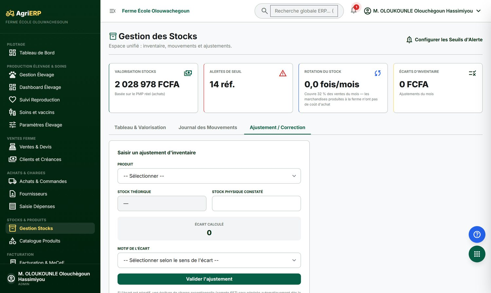
1 2 3 41Stock théorique (logiciel) 2Stock physique compté 3Motif de l'écart 4Valider
Un ajustement génère une écriture comptable : un écart de stock est une perte ou un profit qui touche le résultat de la ferme. Ce n'est pas une simple correction d'affichage.
N'ajustez jamais « pour faire coller les chiffres ». Comptez physiquement, notez le motif réel, et signalez tout écart important au responsable.
Le motif est obligatoire et il est conservé. Un ajustement sans explication crédible sera relevé lors du contrôle des comptes — écrivez ce qui s'est passé, pas « régularisation ».
Catalogue Produits
Deux affichages sont disponibles et les mêmes catégories qu'à la caisse permettent de filtrer.
| Bouton | Affichage obtenu |
|---|---|
| grid_view (grille) | Une carte par produit, avec sa photo, sa fourchette de prix et son stock. Pratique au comptoir. |
| view_list (liste) | Un tableau dense, plus lisible pour comparer des dizaines de produits d'un coup d'œil. |
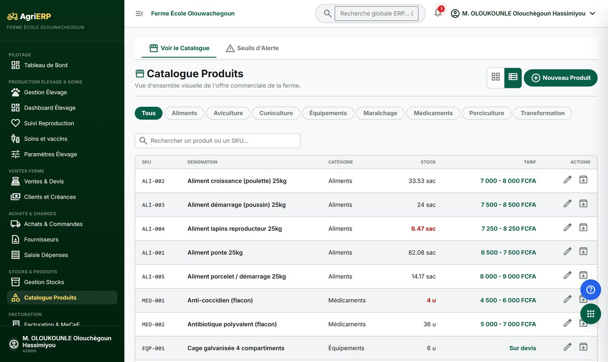
Le choix grille ou liste est un simple confort d'affichage : il ne change ni les données, ni les filtres, ni les actions disponibles sur chaque produit.
Nouveau Produit, ou Catalogue Produits ➔ Ajouter un Produit
Un produit n'est jamais supprimé : il est archivé. L'icône archive le retire du catalogue actif tout en conservant l'historique des ventes qui le mentionnent. Un administrateur peut le restaurer depuis Paramètres ➔ Restauration.
Gestion Stocks ➔ Configurer les Seuils d'Alerte
Colonnes : Produit, Stock actuel, Seuil configuré, Statut. Les deux indicateurs du haut rappellent le nombre de produits sous seuil et de seuils configurés.
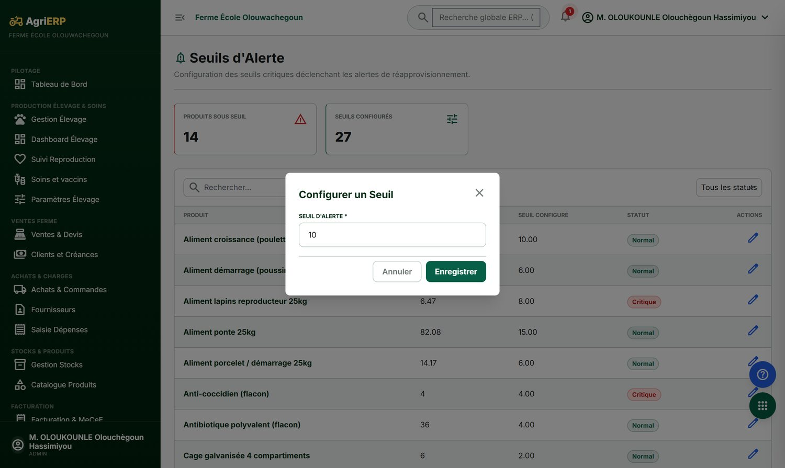
Le seuil déclenche trois choses à la fois : la mention Urgence dans le tableau des stocks, l'alerte critique du tableau de bord et la notification de stock critique. Un seul réglage, trois signaux.
Réglez le seuil sur la consommation du délai de réapprovisionnement. Si la provende met une semaine à arriver et que vous en consommez 4 sacs par semaine, le seuil est de 4 sacs — pas de 1.
Suivre les factures normalisées et leur transmission à la DGI.
MeCeF est le système de facturation normalisée de la Direction Générale des Impôts du Bénin. Chaque facture doit lui être transmise et reçoit en retour un code de certification et un QR code.
Facturation & MeCeF
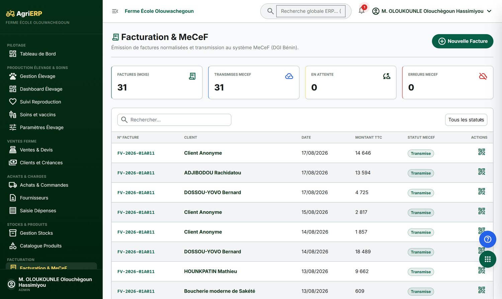
1Colonnes : N° facture, Client, Date, Montant TTC, Statut MeCeF. Les filtres permettent d'isoler les statuts Transmise, En attente ou Erreur MeCeF.
Le bouton Nouvelle Facture ne crée pas une facture directement : il vous renvoie vers Ventes & Devis. C'est voulu — une facture naît toujours d'une vente. Une facture saisie séparément de la vente donnerait deux chiffres d'affaires différents.
| Statut | Signification et action attendue |
|---|---|
| Transmise | La facture est certifiée par la DGI. Le QR code est disponible : cliquez sur l'icône QR de la ligne pour l'afficher et l'imprimer. |
| En attente | La transmission n'a pas encore abouti. C'est normal juste après la vente, ou pendant une coupure réseau. Vérifiez à nouveau plus tard. |
| Erreur MeCeF | La transmission a échoué. Utilisez l'action de relance sur la ligne. Si l'erreur persiste, prévenez l'administrateur. |
Une facture En attente ou en erreur reste une vente parfaitement valide dans AgriERP : la marchandise est sortie, l'argent est encaissé, la comptabilité est à jour. Seule la certification fiscale manque. Ne ressaisissez jamais la vente pour « réessayer » — vous la compteriez deux fois.
La TVA appliquée dépend du paramétrage de la ferme : Paramètres ➔ Données de l'Entreprise. L'IFU et le RCCM y sont également saisis — ils figurent sur toutes les factures éditées.
Registre des employés, pointage, paie, stagiaires et attestations.
L'écran Personnel & Stages compte cinq onglets : Registre Employés, Registre Stagiaires, Feuille de Pointage, Gestion de la Paie et Attestations.
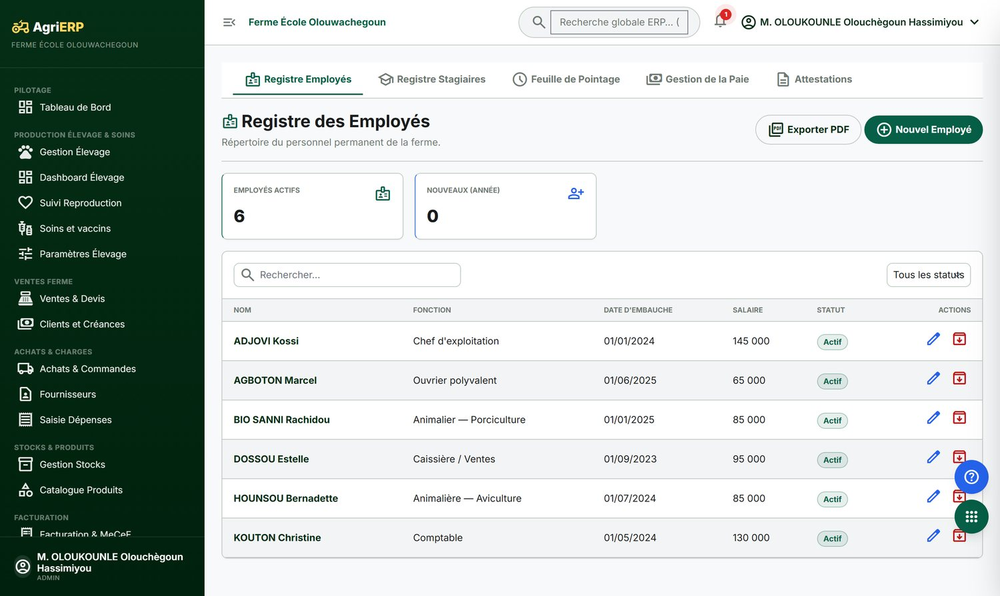
1 2Colonnes : Nom, Fonction, Date d'embauche, Salaire, Statut.
Un employé qui quitte la ferme se met en Suspendu ou s'archive — il ne se supprime pas. Ses bulletins de paie passés doivent rester consultables.
Sur chaque ligne, l'icône crayon rouvre la même fenêtre, préremplie ; l'icône archive retire l'employé des listes actives.
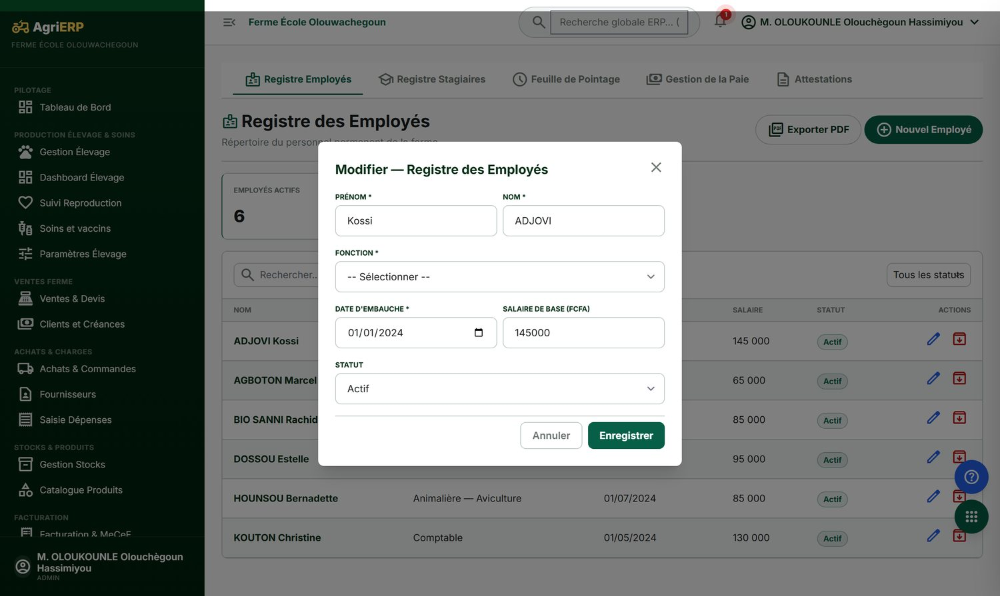
Pour une absence de longue durée, préférez le statut Congé à l'archivage : l'employé reste dans la liste de pointage et sa paie continue d'être calculée selon les règles de la ferme.
Personnel & Stages ➔ Feuille de Pointage ➔ Enregistrer un Pointage
Le pointage n'est pas décoratif : les absences saisies ici sont déduites automatiquement du bulletin de paie du mois. Un pointage oublié est un salaire payé en trop.
Personnel & Stages ➔ Gestion de la Paie
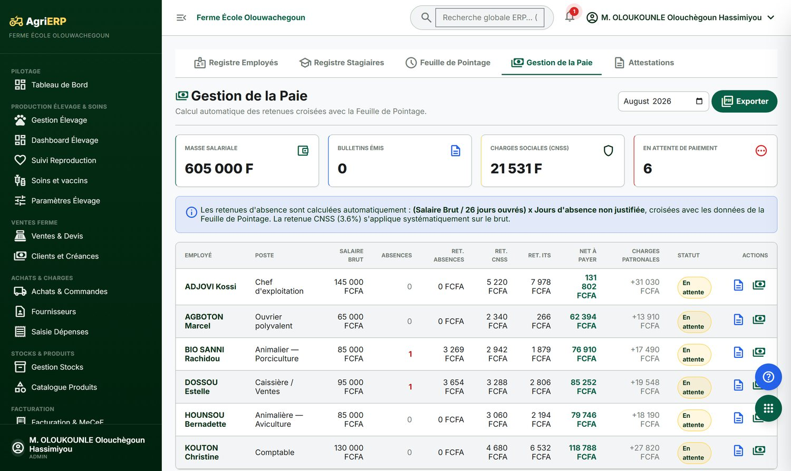
1Colonnes : Employé, Poste, Salaire brut, Absences, Ret. absences, Ret. CNSS, Ret. ITS, Net à payer, Charges patronales, Statut.
Les retenues sont calculées par le logiciel selon la réglementation béninoise : la CNSS salariale et l'ITS (impôt sur les traitements et salaires, calculé par tranches). Les charges patronales — VPS, pensions, prestations familiales, risques professionnels — s'ajoutent au coût employeur.
Les taux se règlent dans Paramètres ➔ Données de l'Entreprise, et les tranches d'ITS dans Barème IR-PTS / ITS.
Sur chaque ligne, l'icône document édite le bulletin de paie et l'icône paiement enregistre le règlement du salaire.
Le paiement d'un salaire génère son écriture comptable et sort l'argent du compte de trésorerie choisi. Vérifiez le net à payer avant de cliquer : la correction passe ensuite par le comptable et une écriture de contre-passation.
Personnel & Stages ➔ Registre Stagiaires ➔ Nouveau Stagiaire
Les icônes de la ligne permettent d'enregistrer une absence et de générer l'attestation de stage.
Personnel & Stages ➔ Attestations
Deux boutons : Générer une Attestation produit le document pour un employé ou un stagiaire ; Personnaliser les Modèles adapte le texte type de la ferme.
Personnalisez le modèle une seule fois, en début de campagne. Toutes les attestations générées ensuite reprennent la même formulation — plus de version différente selon la personne qui l'édite.
Plan comptable, journal, grand livre, balances, bilan, TVA, banque, immobilisations et clôture.
Ce chapitre s'adresse principalement au comptable et à l'administrateur. Les autres utilisateurs n'ont pas accès à ces écrans — mais tous alimentent la comptabilité sans le savoir, à chaque vente et à chaque dépense.
C'est le point le plus important du chapitre. Dans AgriERP, vous ne ressaisissez jamais en comptabilité ce qui a déjà été saisi ailleurs.
Une vente au comptoir ➔ Écriture SYSCOHADA générée ➔ Grand livre ➔ Balance ➔ Bilan
Chaque opération de gestion déclenche automatiquement son écriture : vente, achat, dépense, avoir, règlement client, règlement fournisseur, paie, virement interne, écart d'inventaire, acquisition d'immobilisation et dotation aux amortissements.
Tous les rapports comptables — grand livre, balance, bilan, états financiers — sont lus depuis le grand livre, jamais recalculés à partir des tables de vente ou d'achat. C'est ce qui garantit qu'un chiffre présenté au bilan est bien celui qui figure au journal.
Ne ressaisissez jamais une vente ou une dépense au journal comptable « pour être sûr » : elle y est déjà. Vous compteriez l'opération deux fois, et l'erreur ne se verrait qu'au bilan.
La saisie manuelle au journal est réservée aux écritures qui n'ont aucun écran métier : apport en capital, régularisation, opération diverse.
Comptabilité ➔ Plan Comptable
La liste des comptes SYSCOHADA de la ferme : N° compte, Intitulé, Classe.
| Classe | Contenu |
|---|---|
| 1 | Ressources — capital, résultat, emprunts |
| 2 | Immobilisations — bâtiments, cages, matériel, amortissements |
| 3 | Stocks |
| 4 | Tiers — clients, fournisseurs, personnel, État |
| 5 | Trésorerie — caisse, banque, mobile money |
| 6 | Charges |
| 7 | Produits |
Pour créer un compte : Nouveau Compte, puis saisissez le Numéro de compte, l'Intitulé et la Classe.
L'icône crayon rouvre la fenêtre, préremplie ; l'icône archive retire le compte des listes de sélection.
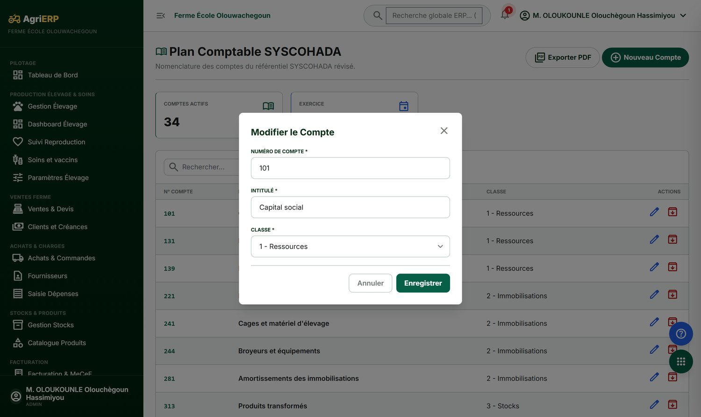
Ne modifiez jamais le numéro d'un compte qui porte déjà des écritures : le grand livre, la balance et le bilan s'appuient dessus. Créez un nouveau compte et archivez l'ancien plutôt que de renuméroter.
Le premier chiffre du numéro doit correspondre à la classe choisie : un compte de charges commence par 6, un compte de produits par 7. Un compte mal classé fausse le compte de résultat sans jamais déclencher d'erreur visible.
Comptabilité ➔ Journal Comptable
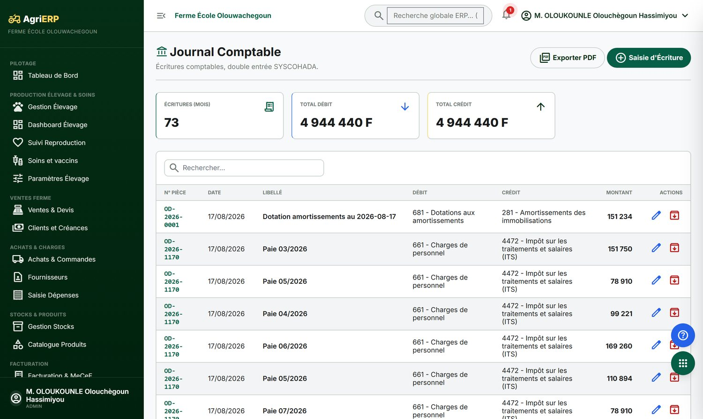
1 2Colonnes : N° pièce, Date, Libellé, Débit, Crédit, Montant.
Trois contrôles sont appliqués avant tout enregistrement, et l'écriture est refusée si l'un échoue :
Aucune écriture déséquilibrée n'entre jamais en base — même partiellement.
Le message « exercice clos » signifie que vous tentez d'écrire à une date déjà arrêtée. Ce n'est pas une panne. Deux solutions : passer l'écriture à une date de l'exercice ouvert, ou demander à l'administrateur une déclôture exceptionnelle (section 8.9).
Comptabilité ➔ Grand Livre
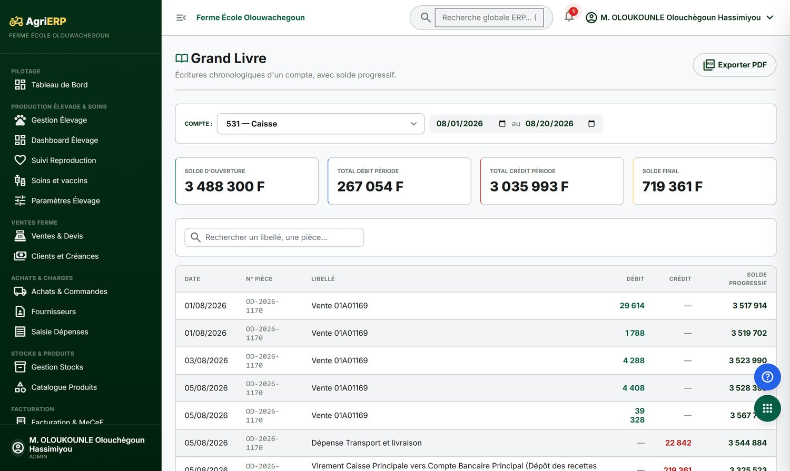
1Choisissez un compte dans la liste Compte : toutes ses écritures s'affichent avec Date, N° pièce, Libellé, Débit, Crédit et un solde progressif ligne à ligne.
C'est l'outil de contrôle par excellence. Un solde de caisse qui vous surprend ? Ouvrez le compte 531 au grand livre et remontez les lignes : l'opération fautive saute aux yeux, avec sa date et son libellé.
Comptabilité ➔ Balance Générale
Pour la Période choisie, chaque compte est présenté avec son solde d'ouverture, ses mouvements de la période (débit et crédit) et son solde final.
Sur une balance juste, le total des débits égale le total des crédits. C'est le premier contrôle à faire avant toute clôture.
Comptabilité ➔ Balance Âgée
Choisissez le Volet (clients ou fournisseurs) et la date d'Arrêté au. Les montants sont ventilés par ancienneté : Non échu, 1 à 30 jours, 31 à 60, 61 à 90, plus de 90 jours.
La colonne plus de 90 jours est votre liste de recouvrement prioritaire. Éditez-la en début de mois et travaillez-la avec l'écran Relances Clients.
Comptabilité ➔ Bilan Simplifié présente l'actif et le passif de la ferme à une date donnée.
États Financiers réunit quatre onglets. Le bouton Exporter PDF (Onglet Actif) édite uniquement l'onglet affiché.
| Onglet | Contenu |
|---|---|
| Bilan | Actif (emplois) face à Passif (ressources) à la date d'arrêté. |
| Compte de Résultat | La structure en cascade SYSCOHADA : des produits d'exploitation jusqu'au résultat net, soldes intermédiaires compris. |
| Flux de Trésorerie | Le TAFIRE simplifié : d'où vient l'argent, où il est parti. |
| Notes Annexes | Le détail des postes du bilan, actif et passif. |
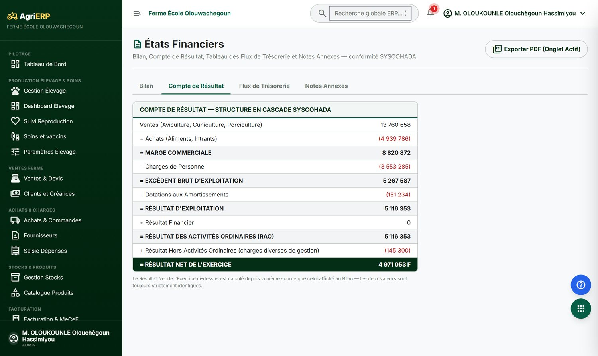
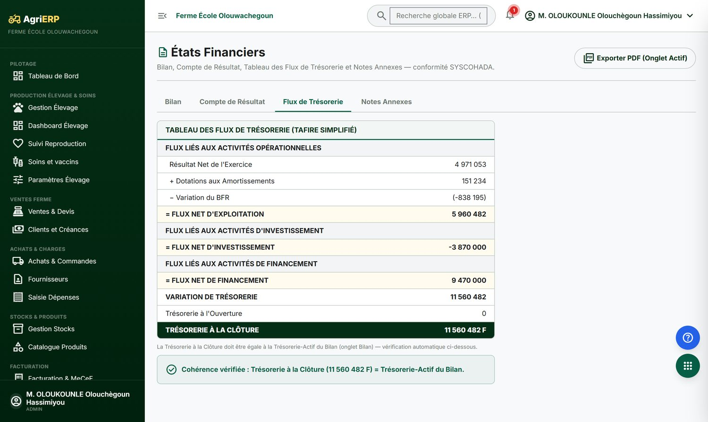
Un résultat positif au compte de résultat ne signifie pas qu'il y a de l'argent en caisse. Le compte de résultat mesure l'activité, le tableau des flux mesure la trésorerie. Une ferme peut être bénéficiaire et à court d'argent si ses clients ne l'ont pas encore payée — lisez toujours les deux ensemble.
Un bilan qui ne s'équilibre pas signale presque toujours un exercice non clôturé ou une écriture d'ouverture manquante. N'ajustez rien à la main : reprenez d'abord la balance générale.
Comptabilité ➔ Déclaration TVA
Choisissez la Période de déclaration. L'écran présente la TVA collectée (sur les ventes) et la TVA déductible (sur les achats), puis le solde à payer. Le bouton Générer la Déclaration PDF édite le document.
Comptabilité ➔ Rapprochement Bancaire
Une ligne présente sur le relevé mais absente du logiciel est une opération non saisie (frais bancaires, virement reçu). Une ligne présente dans le logiciel mais absente du relevé est une opération en cours (chèque non encaissé) — ou une erreur de saisie.
Comptabilité ➔ Immobilisations
Le bouton Passer la Dotation génère l'écriture d'amortissement de la période. Le tableau suit la valeur brute, l'amortissement cumulé et la valeur nette comptable (V.N.C.).
Choisissez Reprise d'antériorité pour un bien déjà possédé avant l'informatisation : aucune écriture ne sera générée. Choisir un mode de paiement pour un bien ancien ferait sortir de l'argent d'un compte de trésorerie aujourd'hui, pour un achat fait il y a trois ans.
Comptabilité ➔ Comptabilité Analytique répartit le chiffre d'affaires, les charges et la marge par filière : aviculture, cuniculture, porciculture, maraîchage.
C'est le tableau à présenter en conseil d'exploitation : il montre en une page quelle filière porte la ferme et laquelle consomme sans rendre.
Comptabilité ➔ Clôture d'Exercice ➔ Clôture Périodique
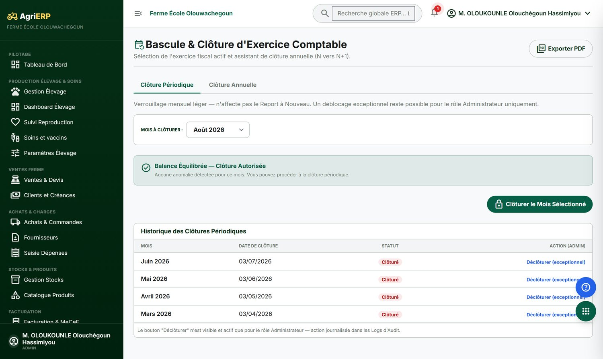
1 2 3Une fois le mois clôturé, plus aucune écriture ne peut y être passée. Le tableau conserve la trace de chaque clôture : Mois, Date de clôture, Statut.
Avant de clôturer, assurez-vous que toutes les pièces du mois sont saisies : dernières ventes, dernières dépenses, factures fournisseurs reçues en retard. Une pièce oubliée devra faire l'objet d'une déclôture, opération exceptionnelle et tracée.
Le bouton Déclôturer (exceptionnel) est réservé à l'administrateur. Son usage est enregistré au journal d'audit.
Clôture d'Exercice ➔ Clôture Annuelle
La clôture annuelle arrête définitivement l'exercice, calcule le résultat et l'affecte, puis ouvre l'exercice suivant avec les à-nouveaux. Un assistant vous guide pas à pas.
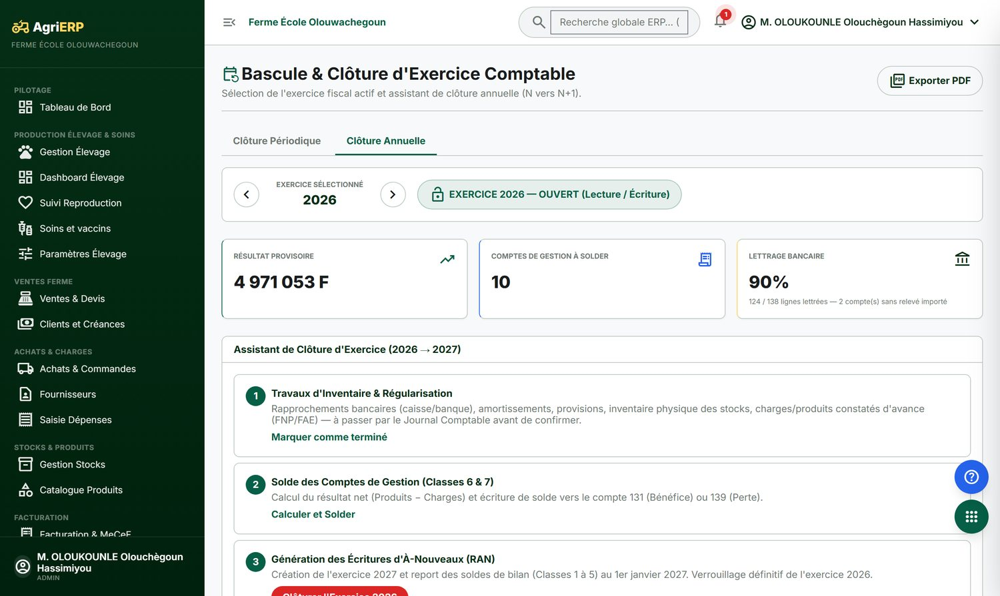
L'écran rappelle en permanence trois éléments : l'exercice sélectionné, le résultat provisoire calculé à cet instant, et le nombre de comptes de gestion à solder.
Le résultat provisoire s'affiche avant toute validation. Comparez-le au résultat du compte de résultat : s'ils diffèrent, une écriture manque ou un mois n'est pas clôturé. Ne poursuivez pas tant que les deux ne concordent pas.
La clôture annuelle est l'opération la plus lourde et la moins réversible du logiciel. Avant de la lancer :
Ne lancez jamais cette opération seul, un vendredi soir, sans sauvegarde téléchargée.
Éditer les états de synthèse et les sortir en PDF ou en Excel.
Rapport Mensuel
Un tableau unique compare, indicateur par indicateur, le mois en cours et le mois précédent, avec la variation en pourcentage. Le bouton Exporter PDF édite le document.
C'est le document de pilotage mensuel : éditez-le le 1er de chaque mois et classez-le. Douze exemplaires font une année d'historique lisible en dix minutes.
Rapports & Exports
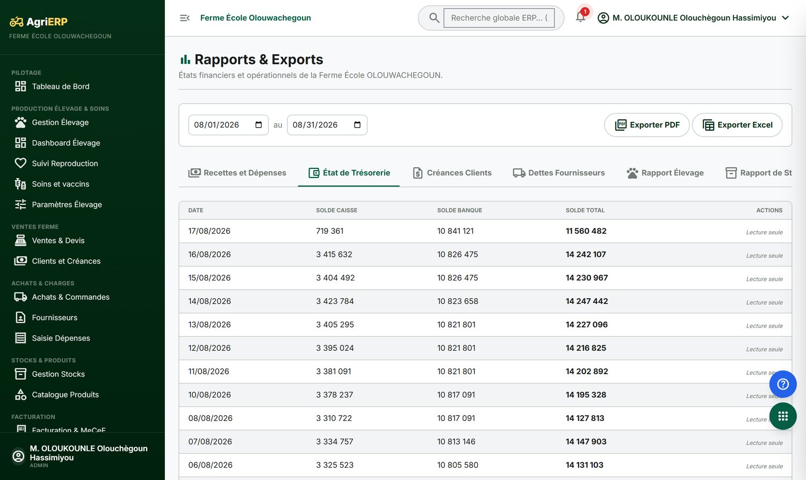
1 2 3| Rapport | Contenu |
|---|---|
| Recettes et Dépenses | Toutes les entrées et sorties de la période, ligne par ligne. |
| État de Trésorerie | Solde caisse, solde banque et solde total, jour par jour. |
| Créances Clients | Ce que les clients doivent, avec les échéances. |
| Dettes Fournisseurs | Ce que la ferme doit, avec les échéances. |
| Rapport Élevage | Trois tableaux distincts (voir ci-dessous). |
| Rapport de Stocks | Valeur du stock par catégorie et articles sous seuil. |
Deux indicateurs coiffent l'écran : le taux de ponte moyen et le taux de mortalité hebdomadaire. En dessous, trois tableaux se sélectionnent par un bouton.
| Tableau | Colonnes |
|---|---|
| 1 — Recensement | Date, Lot / souche, Effectif M, Effectif F, Sous mères, Sevrés, Achats, Nés, Morts, Effectif final |
| 2 — Mouvements, traitements & ventes | Date, Lot, Sexe vendu, Qté vendue, Montant vente (FCFA), Effectif final, Traitement administré, Dose, Signes de maladie observés |
| 3 — Suivi de la ponte | Âge (sem.), Jour, Lot, Total œufs récoltés (OR), Taux ponte %, Cassés/fêlés (OF), Commercialisables (OR-OF), Stock restant hier (SRH), Total stock (TS), Sorties vente OS (plateaux), Stock final |
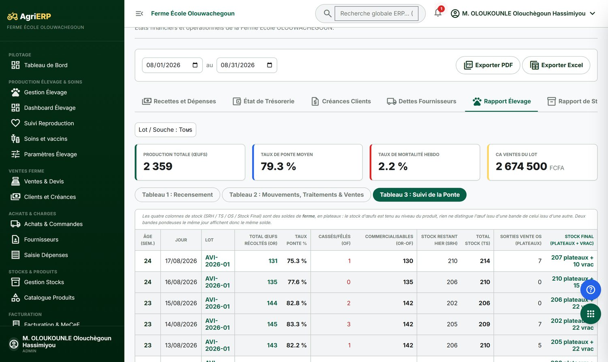
Ces trois tableaux reprennent exactement la structure des registres papier de la ferme. Ils sont conçus pour être imprimés et classés tels quels, sans remise en forme.
L'export PDF ne prend que le tableau affiché. Pour un dossier complet, exportez les trois l'un après l'autre.
L'export reprend exactement la période et les filtres affichés à l'écran. Vérifiez donc vos dates avant d'exporter : un PDF sorti sur la mauvaise période ressemble en tout point à un PDF juste.
Réservé à l'administrateur : entreprise, utilisateurs, rôles, modules, sauvegardes et journal d'audit.
L'écran Paramètres compte neuf onglets. Les réglages qui y sont faits s'appliquent à toute la ferme et à tous les utilisateurs — d'où la restriction au rôle administrateur.
Paramètres ➔ Données de l'Entreprise
L'IFU et le RCCM figurent sur toutes les factures éditées par le logiciel. Une erreur ici se retrouve sur chaque document remis à un client ou à l'administration fiscale.
Serveur SMTP, Port, Sécurité, Utilisateur SMTP, Mot de passe. Le bouton Envoyer un e-mail de test vérifie la configuration avant qu'un client ne reçoive rien.
Les taux utilisés par la paie : CNSS salariale (%), VPS — versement patronal sur salaires (%), CNSS patronale — pensions (%), — prestations familiales (%), — risques professionnels (%).
Terminez toujours par Enregistrer les Modifications.
Ne modifiez un taux de charge sociale qu'après publication officielle d'un nouveau barème. Un taux changé en cours d'année rend les bulletins du mois incohérents avec ceux des mois précédents.
Paramètres ➔ Gestion Utilisateurs
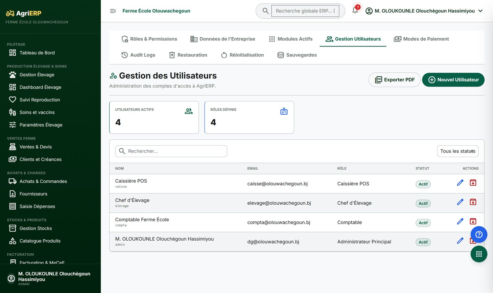
1 2Un compte par personne. Un compte « caisse » partagé par trois vendeuses rend le journal d'audit inutilisable : plus personne ne peut dire qui a saisi quoi le jour où un écart apparaît.
Demandez à chaque nouvel utilisateur de changer son mot de passe provisoire dès sa première connexion, depuis Mon Profil.
Un utilisateur qui quitte la ferme s'archive (icône archive) — il ne se supprime pas. Son historique d'actions reste consultable.
Paramètres ➔ Rôles & Permissions
Une matrice croise les quatre rôles et les modules : Dashboard, Ventes & Devis, Achats & Charges, Stocks, Élevage & Soins, RH, Comptabilité, Administration, Paramètres.
Ne retirez jamais une permission au rôle Admin : vous risquez de vous fermer l'accès aux paramètres, y compris celui qui permettrait de corriger l'erreur.
Paramètres ➔ Modules Actifs
Chaque filière d'élevage — cuniculture, aviculture, porciculture, héliciculture — s'active ou se désactive ici. Un module désactivé disparaît du menu et ses fiches affichent « Module non activé ».
Désactiver un module ne supprime aucune donnée : les bandes et les fiches restent en base et réapparaissent intactes à la réactivation.
Paramètres ➔ Modes de Paiement
Le virement interne ne change pas la trésorerie totale de la ferme : il déplace de l'argent d'un compte vers un autre. Utilisez-le systématiquement pour les dépôts en banque, sinon la caisse restera créditée d'un argent qui n'y est plus.
Paramètres ➔ Barème IR-PTS / ITS
Les tranches d'imposition sur les salaires : De (FCFA), À (FCFA), Taux (%). Utilisez Ajouter une tranche puis Enregistrer le barème.
Les tranches doivent être continues et sans chevauchement : la borne haute d'une tranche est la borne basse de la suivante. Un trou dans le barème produit un impôt calculé faux, sans message d'erreur.
Paramètres Intégrations
Deux blocs indépendants : la configuration SMTP (hôte, port, sécurité, identifiant, mot de passe, adresse d'expédition) et la configuration SMS (fournisseur et identifiants). Le bouton Tester vérifie la liaison.
Paramètres ➔ Sauvegardes
Une sauvegarde automatique est produite chaque nuit à 2 h. Le bouton Générer une sauvegarde en crée une immédiatement, avant une opération sensible.
Les boutons Exporter ce module et Importer permettent de transférer les données d'un module précis.
Une sauvegarde laissée sur le serveur ne protège de rien. L'incendie, le vol du serveur ou la panne de disque emportent la base et ses sauvegardes.
Téléchargez la sauvegarde chaque semaine sur un support extérieur — clé USB, disque externe, espace en ligne. Un rappel hebdomadaire est envoyé à l'administrateur ; ne l'ignorez pas.
Paramètres ➔ Restauration
Tout ce qui a été archivé dans le logiciel se retrouve ici : Type, Élément, Module, Archivé le. L'action de restauration remet l'élément en service.
Un client, un produit, un fournisseur ou une bande archivés par erreur se récupèrent en un clic. C'est la raison pour laquelle AgriERP archive au lieu de supprimer.
Les écritures comptables ne figurent pas dans la corbeille, et c'est volontaire : une écriture ne se restaure pas, elle se contre-passe. La faire réapparaître dans un exercice éventuellement clos déséquilibrerait le grand livre.
Paramètres ➔ Réinitialisation
Cet écran efface des données de façon définitive. Il sert à repartir d'une base propre après une phase de test — jamais en exploitation courante.
Ne l'utilisez que sur instruction écrite de la direction, après avoir généré et téléchargé une sauvegarde complète. Aucune corbeille, aucune restauration ne rattrape cette opération.
Paramètres ➔ Audit Logs
Chaque action sensible y est tracée : Horodatage, Utilisateur, Action, Module. Le bouton Exporter le Journal édite l'historique.
C'est le premier écran à ouvrir en cas de doute : « qui a annulé cette vente ? », « quand ce mois a-t-il été déclôturé ? ». Les connexions échouées y figurent également — plusieurs échecs successifs sur un même compte méritent une vérification.
Administration — trois onglets.
Renseignez la date d'expiration des documents à durée limitée — agrément, assurance, contrat. Le logiciel vous préviendra avant l'échéance, ce que le classeur papier ne fait pas.
Trouver une réponse seul, puis joindre l'éditeur quand c'est nécessaire.
Cliquez sur votre nom en haut à droite ➔ Aide & À Propos.
L'écran s'ouvre sur l'identité du logiciel : le nom, le numéro de version installé, la ferme destinataire et l'éditeur. C'est le premier renseignement à donner en cas de demande d'assistance.
Une grille de cartes présente chaque module avec une courte description. Chaque carte est un raccourci : un clic ouvre directement l'écran correspondant.
C'est l'écran à montrer à un nouvel arrivant le premier jour : en une page, il voit tout ce que le logiciel couvre et peut ouvrir chaque module d'un clic pour se repérer.
La partie basse de l'écran regroupe les questions les plus fréquentes.
La recherche porte à la fois sur la question et sur le texte de la réponse. Si un mot vous vient à l'esprit, tapez-le : la bonne entrée remonte même s'il ne figure pas dans le titre.
Cliquez sur votre nom en haut à droite ➔ Contactez l'Éditeur.
L'écran comporte deux onglets — Envoyer un Message et Signaler un Bug — et un encadré permanent avec les coordonnées de l'éditeur.
Votre nom et votre adresse e-mail sont joints automatiquement : inutile de les recopier dans le message. L'éditeur sait donc toujours qui écrit, et peut vous répondre directement.
Utilisez cet onglet quand le logiciel ne se comporte pas comme prévu : un bouton sans effet, un chiffre manifestement faux, un message d'erreur inattendu.
Un bon signalement tient en trois phrases :
« Sur l'écran Enregistrer Vente, j'ajoute un plateau d'œufs puis je clique sur Valider la Vente. Un message rouge s'affiche : “Le panier est vide.” Le panier contient pourtant bien un article. »
Écran, geste, message exact. Avec la capture jointe, c'est traité en quelques minutes.
Pour faire une capture d'écran sous Windows, appuyez sur la touche Impr. écran, ou utilisez Windows + Maj + S pour ne sélectionner qu'une zone. Enregistrez l'image, puis joignez-la au signalement.
Elles restent affichées à droite des deux onglets.
| Élément | Valeur |
|---|---|
| Éditeur | Dr MASSENON Rhodes — Docteur en Génie Logiciel et IA |
| rarhodes06@gmail.com | |
| contact@massenonrhodes.com | |
| Téléphone | +229 01 51 33 50 40 |
| Mobile | +229 01 97 31 24 37 |
| Horaires | Du lundi au vendredi, 8 h – 17 h (GMT) |
Le formulaire envoie un e-mail réel. Il suppose donc que la configuration d'envoi a été faite : Paramètres ➔ Données de l'Entreprise, bloc SMTP. Si l'envoi échoue, utilisez directement les adresses ci-dessus.
Trois structures interviennent sur ce logiciel, avec des rôles distincts. Savoir à qui s'adresser fait gagner du temps.
| Structure | Rôle | À contacter pour |
|---|---|---|
| PAEB Projet d'Appui à l'Entrepreneuriat au Bénin |
Maîtrise d'ouvrage | Le cadre du projet, son financement et son périmètre. |
| Cabinet FAGUEZ SARL | Accompagnement des PME | L'appui à la ferme dans le cadre du PAEB : organisation, gestion, suivi comptable et validation des paramètres réglementaires — notamment le barème IR-PTS / ITS avant toute paie réelle (section 10.6). |
| Dr MASSENON Rhodes Docteur en Génie Logiciel et IA |
Éditeur du logiciel | Tout ce qui touche au fonctionnement d'AgriERP : anomalie, question d'utilisation, évolution (section 11.2). |
La règle simple : un écran qui se comporte mal relève de l'éditeur ; un chiffre réglementaire à valider — taux de charges sociales, tranches d'impôt, plan comptable — relève du cabinet d'accompagnement. Le logiciel applique ce qu'on lui donne, il ne décide pas d'un barème fiscal.
Trois réflexes règlent la plupart des situations, et vous feront gagner du temps :
Si vous devez appeler, ayez sous les yeux : le numéro de version (écran Aide & À Propos), le nom de l'écran concerné et le message exact affiché. Ces trois éléments suffisent presque toujours au diagnostic.
Matrice des rôles, dépannage, glossaire et rappels de sécurité.
| Module | Admin | Comptable | Caissier | Animalier |
|---|---|---|---|---|
| Tableau de bord | ✔ | ✔ | ✔ | ✔ |
| Notifications, profil, aide | ✔ | ✔ | ✔ | ✔ |
| Élevage & soins | ✔ | — | — | ✔ |
| Ventes & devis | ✔ | — | ✔ | — |
| Clients & créances | ✔ | — | ✔ | — |
| Facturation & MeCeF | ✔ | — | ✔ | — |
| Achats & dépenses | ✔ | — | — | — |
| Stocks & produits | ✔ | — | — | — |
| Personnel & stages | ✔ | — | — | — |
| Comptabilité | ✔ | ✔ | — | — |
| Clôture d'exercice | ✔ | ✔ | — | — |
| Rapports & exports | ✔ | ✔ | — | — |
| Administration & paramètres | ✔ | — | — | — |
Le caissier peut exporter ses ventes et l'animalier archiver ses bandes : ces droits particuliers s'ajoutent aux accès du tableau ci-dessus.
| Situation | Ce qu'il faut faire |
|---|---|
| Je n'arrive pas à me connecter | Vérifiez la casse du mot de passe et la touche Verr. Maj. Utilisez Mot de passe oublié ?. Après plusieurs échecs, contactez l'administrateur : le compte peut avoir été désactivé. |
| Un écran n'apparaît pas dans mon menu | Votre rôle ne l'autorise pas (annexe A). Ce n'est pas une panne. |
| « Vente interdite — rémanence vétérinaire » | La bande est sous délai d'attente après un traitement. Retirez l'article du panier et prévenez le chef d'élevage. |
| « Stock insuffisant » | La vente reste possible. Signalez l'écart pour un ajustement d'inventaire (section 5.3). |
| « Exercice clos » | La date de l'écriture tombe dans un mois déjà clôturé. Changez la date, ou demandez une déclôture à l'administrateur. |
| Écriture refusée : débit ≠ crédit | Les deux montants doivent être rigoureusement égaux. Vérifiez la saisie. |
| Le stock affiché est faux | Ouvrez le Journal des Mouvements et remontez l'historique du produit avant tout ajustement. |
| Facture « Erreur MeCeF » | Relancez la transmission depuis la ligne. Ne ressaisissez jamais la vente. |
| J'ai archivé quelque chose par erreur | Demandez à l'administrateur de le restaurer depuis Paramètres ➔ Restauration. |
| Le taux de ponte est à 0 % | La récolte du jour n'a pas encore été saisie, ou l'effectif de la bande est nul. |
| Le GMQ ne s'affiche pas | Il faut au moins deux pesées enregistrées sur la bande. |
| Le logiciel ne répond plus | Actualisez la page (touche F5). Si le problème persiste, notez l'heure et le message exact, puis prévenez l'administrateur. |
| Terme | Définition |
|---|---|
| Bande (ou lot) | Groupe d'animaux de même espèce, entrés ensemble et suivis ensemble. |
| Effectif | Nombre de têtes vivantes à un instant donné. |
| Taux de ponte | Œufs récoltés ÷ effectif de pondeuses × 100. |
| OR / OF | Œufs récoltés / œufs cassés ou fêlés. Les commercialisables valent OR − OF. |
| GMQ | Gain moyen quotidien : prise de poids en grammes par jour. |
| Ration normative | Quantité théorique de provende par tête et par jour. |
| Rémanence | Délai d'attente après un traitement, pendant lequel l'animal ne peut pas être vendu. |
| Prophylaxie | Ensemble des mesures préventives : vaccins, vermifuges, désinfections. |
| PMP | Prix moyen pondéré : coût moyen d'une unité en stock. |
| Créance | Somme qu'un client doit encore à la ferme. |
| Dette fournisseur | Somme que la ferme doit encore à un fournisseur. |
| Avoir | Document annulant tout ou partie d'une facture, après retour de marchandise. |
| SYSCOHADA | Plan comptable commun aux pays de l'OHADA, dont le Bénin. |
| MeCeF | Système de facturation normalisée de la DGI du Bénin. |
| IFU / RCCM | Identifiant fiscal unique / registre du commerce et du crédit mobilier. |
| CNSS | Caisse nationale de sécurité sociale. |
| ITS | Impôt sur les traitements et salaires, calculé par tranches. |
| Contre-passer | Annuler une écriture comptable par une écriture inverse, sans jamais l'effacer. |
| Clôture | Arrêt définitif d'une période : plus aucune écriture ne peut y être passée. |
| Archiver | Retirer un élément des listes actives en conservant ses données et son historique. |
Ne partagez jamais votre mot de passe. Toute action est enregistrée au nom du compte connecté.
Ne ressaisissez jamais une vente ou une dépense au journal comptable. L'écriture existe déjà : vous la compteriez deux fois.
Ne contournez jamais un blocage de rémanence vétérinaire. C'est un risque sanitaire, pas une contrainte informatique.
N'ajustez jamais un stock « pour faire coller les chiffres ». Comptez, puis saisissez le motif réel de l'écart.
Ne lancez jamais une clôture annuelle ou une réinitialisation sans sauvegarde téléchargée hors du serveur.
Ne laissez jamais une session ouverte sur le poste du comptoir. Déconnectez-vous en quittant.
Quatre comptes sont créés à l'installation, un par rôle. Leur mot de passe initial est remis par l'administrateur, séparément de ce manuel.
| Identifiant | Rôle | Poste concerné |
|---|---|---|
| admin | Administrateur | Direction et support technique |
| compta | Comptable | Bureau comptable |
| caisse | Caissier | Comptoir de vente |
| elevage | Animalier | Chef d'élevage et soigneurs |
Ces comptes sont livrés avec un mot de passe par défaut. Changez-les tous lors de la mise en service réelle, et créez ensuite un compte nominatif par utilisateur plutôt que de partager ces quatre-là.
Un aide-mémoire pour retrouver rapidement quelle information se trouve dans quel écran.
| Écran | Colonnes du tableau |
|---|---|
| Bandes & Sujets | Code bande · Espèce · Stade · Date création · Effectif initial · Effectif actuel · Mortalité · Statut · Actions |
| Enregistrer des Sujets | Date · Bande · Espèce · Origine · Quantité |
| Registre Vétérinaire | Date · Lot / espèce · Type d'action · Produit · Dose · Actions |
| Suivi Sanitaire | Date d'entrée · Lot / sujet · Motif · Niveau d'isolement · Statut · Actions |
| Calendriers de Prophylaxie | Jour / période · Traitement prévu · Produit conseillé · Posologie · Délai rémanence · Actions |
| Types de Provende | Nom du type d'aliment · Espèce cible · Poids sac standard (kg) · Prix indicatif (FCFA/kg) |
| Fiche de Rationnement | Espèce · Stade physiologique / tranche d'âge · Ration (g/tête/jour) · Actions |
| Suivi Reproduction (lapins) | Bande · N° lapine · Date saillie · Mâle n° · Palpation · Mise bas attendue · Nés (vivants) · Statut |
| Suivi Reproduction (porcs) | Bande · N° truie · Date saillie · Verrat n° · Retour chaleur · Mise bas attendue · Nés (vivants) · Statut |
| Registre des Reproducteurs | Identifiant · Espèce · Sexe · Race · Bande · Cage · Statut · Actions |
| Analyse des Croissances | Bande · Espèce · Dernière pesée · Poids précédent (g) · Poids actuel (g) · Jours écoulés · GMQ (g/jour) · Statut vs objectif |
| Transformation | Date · Bande source · Sujets abattus · Produit fini · Qté produite · Statut |
| Historique des Ventes | Facture · Client · Date · Articles · Remise · Total TTC · Payé · Reste · Mode · Statut · Actions |
| Devis | N° devis · Client · Date · Validité · Montant · Statut · Actions |
| Retours et Avoirs | Avoir · Facture · Client · Date · Motif · Décision · Montant · Statut · Actions |
| Liste des Clients | Nom · Téléphone · Ville · Total achats · Solde dû · Statut · Actions |
| Suivi des Dettes clients | Débiteur · Facture associée · Échéance · Total facturé · Solde restant · Actions |
| Historique des Avances | Client · Montant avance · Solde restant · Date · Statut · Actions |
| Liste d'Achats | Référence achat · Date · Fournisseur · Catégorie · Montant total · Statut · Actions |
| Bons de Commande | Réf commande · Date d'émission · Livraison attendue · Fournisseur · Montant estimé · Statut · Actions |
| Fiches Fournisseurs | Nom · Catégorie · Total achats (année) · Dernière commande · Statut · Actions |
| Dettes Fournisseurs | Fournisseur · Montant dû · Échéance · Statut |
| Saisie des Dépenses | Date · Libellé · Catégorie · Montant · Statut · Actions |
| Tableau des stocks | Code · Désignation · Catégorie · Stock · PMP unit. · Valeur · Urgence · Actions |
| Journal des Mouvements | Date / heure · Référence · Produit · Type · Motif · Quantité · Valeur |
| Seuils d'Alerte | Produit · Stock actuel · Seuil configuré · Statut · Actions |
| Facturation & MeCeF | N° facture · Client · Date · Montant TTC · Statut MeCeF · Actions |
| Registre des Employés | Nom · Fonction · Date d'embauche · Salaire · Statut · Actions |
| Feuille de Pointage | Employé · Date · Arrivée · Départ · Statut · Actions |
| Gestion de la Paie | Employé · Poste · Salaire brut · Absences · Ret. absences · Ret. CNSS · Ret. ITS · Net à payer · Charges patronales · Statut · Actions |
| Registre des Stagiaires | Nom · Établissement d'origine · Période · Frais de scolarité · Statut · Actions |
| Plan Comptable | N° compte · Intitulé · Classe · Actions |
| Journal Comptable | N° pièce · Date · Libellé · Débit · Crédit · Montant · Actions |
| Grand Livre | Date · N° pièce · Libellé · Débit · Crédit · Solde progressif |
| Balance Générale | N° compte · Libellé · Solde ouverture · Mouvements période (débit / crédit) · Solde final |
| Balance Âgée | Client · Non échu · 1 à 30 jours · 31 à 60 · 61 à 90 · Plus de 90 jours · Total |
| Immobilisations | Code · Désignation · Acquisition · Durée · Annuité · Cumul amort. · V.N.C. · Comptabilisé · Statut · Actions |
| Comptabilité Analytique | Filière · CA (FCFA) · Charges (FCFA) · Marge (FCFA) · Taux |
| Clôture Périodique | Mois · Date de clôture · Statut · Action (admin) |
| Rapport Mensuel | Indicateur · Mois en cours · Mois précédent · Variation · Actions |
| Centre de Notifications | Date / heure · Catégorie · Message · Gravité · Statut · Actions |
| Gestion des Utilisateurs | Nom · Email · Rôle · Statut · Actions |
| Audit Logs | Horodatage · Utilisateur · Action · Module · Actions |
| Restauration | Type · Élément · Module · Archivé le · Actions |
| Documents Administratifs | Document · Type · Bénéficiaire · Date · Statut · Actions |
| Gestion des Courriers | Référence · Type · Objet · Partie · Date · Actions |
| Archivage des Documents | Document · Catégorie · Date archivage · Expiration · Statut · Actions |
Le chapitre 11 détaille les deux écrans d'assistance : Aide & À Propos et Contactez l'Éditeur.
Dr MASSENON Rhodes — Docteur en Génie Logiciel et IA
E-mail : rarhodes06@gmail.com · contact@massenonrhodes.com
Téléphone : +229 01 51 33 50 40 · +229 01 97 31 24 37
Du lundi au vendredi, 8 h – 17 h (GMT)
Pour signaler un problème utilement, indiquez trois choses : l'écran où vous étiez, ce que vous veniez de faire, et le message exact affiché. Un signalement précis se traite en quelques minutes ; un « ça ne marche pas » demande une journée d'enquête.